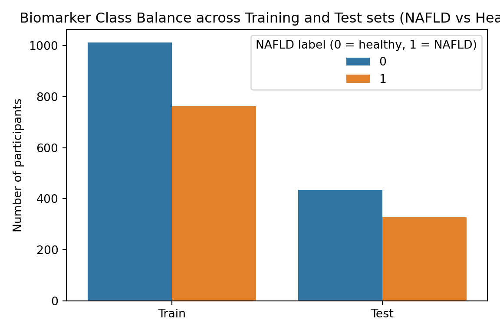

Fatty Liver Disease (FLD) is a broad clinical term used to describe the accumulation of lipid droplets in hepatocytes (Younossi et al., 2023). The most prevalent sub-type of FLD is Non-Alcoholic Fatty Liver Disease (NAFLD), which was renamed Metabolic dysfunction-Associated Steatotic Liver Disease (MASLD) in 2023 via international consensus; MASLD is now defined by hepatic steatosis occurring in the presence of cardiometabolic risk factors but in the absence of significant/harmful levels of alcohol consumption (Rinella & Sookoian, 2024). It is the most common cause of liver disease both domestically and globally, affecting up to 42.2% of adults in the US, and continuing to rise as obesity and type 2 diabetic reports also increase (Jones et al., 2022). FLD causes impaired liver function; though it is often asymptomatic in early stages, it can include symptoms like abdominal pain/discomfort, weight loss, loss of appetite, and fatigue before progressing to more serious effects like fibrosis, cirrhosis, and cancer (Zhu, 2024).
The Hepatic Steatosis Index (HSI) is a validated and non-invasive screening tool used to detect NAFLD (Lee et al., 2010). It was derived from a logistic regression model that was applied to a cross study of 10,724 subjects, and demonstrated an AUC of 0.812, demonstrating the ability to rule out NAFLD with a 93.1% sensitivity at scores below 30, and detect NAFLD with 92.4% specificity at scores of 36 or above (Lee et al., 2010). Because HSI was not included in the NHANES datasets, but it can be computed from available variables, it is used here as the ground truth label for NAFLD classification for each patient.
The following variables are included in HSI calculation:
1) Alanine Aminotransferase (ALT) = liver-specific enzyme that increases with hepatocyte injury/damage; Elevated ALT is clinically used as a primary indicator of hepatic stress (Lee et. al, 2010).
2) Aspartate Aminotransferase (AST) = a tissue enzyme that is used as a biomarker for tissue injury/damage since it is found in muscle, skeletal, neural, cardiac,and hepatic tissue (Lee et. al, 2010). Clinically, AST is used in combination with ALT as an elevated ALT/AST ratio is associated with liver-specific injury consistent with FLD (Lee et al., 2010). Specifically, when hepatocytes are functioning abnormally/exhibiting stress, ALT rises faster than AST, so elevated ALT/AST ratio is known to suggest liver damage/oxidative stress consistent with FLD (Lee et. al., 2010).
3) BMI = a proxy measure of body composition metric that calculated by body weight (kg)/height^2 (m^2) (Lee et al., 2010). While BMI is not always an accurate measure of health, in this context it is useful because visceral adiposity is a primary driver of hepatic lipid accumulation, and therefore FLD risk (Lee et. al, 2010).
4) Sex = Sex is relevant due to the fact that adipose tissue distribution, hormone levels, and enzyme activity differs between male and female; female status is a known risk factor for FLD via HSI proxy determination (Lee et. al, 2010).
5) Diabetes = Type II diabetes is strongly linked to insulin resistance, which drives hepatic lipogenesis and is a central mechanism in the development of FLD (Lee et. al, 2010). Therefore, it is included for diagnostic relevancy (Lee et. al, 2010).
In addition to the core variables included in HSI, this model incorporates supplementary biomarkers that have either established or hypothesized association with NAFLD, with particular relevance to the MTHFR C677T biomarker profile examined in part 1: homocysteine, serum folate, red blood cell (RBC) folate, Methylmalonic Acid (MMA), Gamma-Glutamyl Transferase (GGT), C-Reactive Protein (CRP), Ferritin, and Vitamin B12.
More details on each biomarker are provided below:
1) Homocysteine = a folate metabolism byproduct that accumulates when methylation pathway function is impaired is created when methioinine, an amino acid necessary for all methylation pathways, donates a methyl group (Martinez et al, 2017; Raghubeer et al., 2021). Homocysteine is not inherently harmful, but elevated levels have been independently associated with FLD (Matté et. al, 2009). Case-controlled studies have shown that NAFLD patients show significantly higher homocysteine levels than controls (DeCarvalho, 2013).
2) Serum Folate = folate deficiency impairs hepatic methylation and lipid metabolism. Serum folate is a circulating biomarker, and therefore more prone to short-term dietary fluctuations (Liu et al., 2023). Studies show that NAFLD patients have displayed low serum folate levels compared to control groups (Liu et. al, 2023).
3) RBC Folate = folate metric that reflects longer-term intracellular folate status. In the NHANES 1999–2004 cohort, RBC folate was independently associated with elevated NAFLD risk (Liu et. al, 2023).
4) Methylmalonic Acid (MMA) = a functional biomarker of vitamin B12 status and downstream metabolic activity (Molloy et al., 2016). Elevated MMA has been independently associated with advanced fibrosis risk in NAFLD populations (Liu et al., 2023).
5) Gamma-Glutamyl Transferase (GGT) = a hepatic enzyme involved in glutathione metabolism and oxidative stress pathways. GGT is a more sensitive FLD marker than ALT in many contexts, and elevated levels are consistently associated with NAFLD and metabolic syndrome (Dillon & Miller, 2016).
6) C-Reactive Protein (CRP) = an acute-phase inflammatory marker that is used for detection across several disease states. CRP is significantly elevated in NAFLD when compared to controls, and it is a strong indicator of FLD, which reflects its central role in low-grade inflammation detection in disease pathogenesis (Yeniova et al., 2014).
7) Vitamin B12 = is an important cofactor for methylation and carbon metabolism (Hustad et al., 2007). The CDC has noted Vitamin B12 levels differ between NAFLD and controls, as per the National Health and Nutrition Examination Survey (NHANES) 1999-2004 cohort analysis (Li et. al, 2022).
8) Ferritin = the iron storage protein that is often used as a marker of systemic inflammation (Salem et al., 2024). Serum ferritin has been shown to be significantly elevated in NAFLD patients when compared to controls, and has been correlated with FLD severity, fibrosis score, and insulin resistance (Salem et al., 2024).
The biomarker model uses these additional features to predict NAFLD classification assignment, using the computed HSI label as a ground truth. The data used for these models comes from 2001-2002 and 2003-2004 cohorts of the National Health and Nutrition Examination Survey (NHANES) from the CDC.
It is worth noting that several additional biomarkers with established NAFLD and/or MTHFR associations, such as triglycerides and betaine, were considered for inclusion but ultimately excluded due to high missingness rates in the 2001-2004 NHANES cohorts that would have further reduced the already limited biomarker subset sample size.
2.2.2 Task Definition
This analysis approaches NAFLD classification as a supervised binary classification problem. For each observation, a NAFLD label is assigned as either NAFLD-positive (1) or healthy (0). This label is derived from the computed HSI score, with a threshold of 36 for NAFLD-positive.
To analyze the role of non-HSI variables as indicators for FLD status, two parallel models are trained and evaluated. The core feature model only uses traditional HSI variables (ALT, AST, BMI, sex, diabetic status), while the biomarker model incorporates the additional metabolic features outlined above that are hypothesized to independently signal FLD risk.
The core model functions as methodological validation and reconstruction of the validated HSI proxy measure. Because the NAFLD label is derived directly from HSI, which is calculated from the core features, this model is effectively reconstructing its own labeling function. Ergo, high accuracy is expected by design and serves as confirmation of correct HSI implementation rather than demonstrating new predictive framework. This validation step establishes a performance benchmark against which the biomarker model can be compared. The biomarker model is designed to test whether features outside the HSI standard framework, particularly those relevant to the MTHFR C677T biomarker investigated in Part 1, can recover meaningful classification signal.
2.2.3 Prepare Data
2.2.3.1 Environment
Show code
##python was acting unstable and automatically using the reticulate cache - created .Renviron file to fix this issue so the same python and interpreter are used everytime RStudio or Quarto runs. ##for reproducibility purposes, the export package list can be found in the requirements.txt file. ##first checkSys.getenv("RETICULATE_PYTHON")
The dataset loads with expected dimensions and correct column types and core variables, with no signs of data corruption. It’s important to note that this validation brought two patterns to attention that will need to be addressed downstream in the R portion of this analysis.
The first revealed pattern is a moderate-high level of missingness in the biomarker variables, though this was first identified in pre-processing. Rather than imputing missing values, complete-case subsetting was applied at the model level in order to preserve data integrity, though this came at the cost of a reduced sample size in the biomarker model.
The second pattern is the appearance of extreme outliers across several continuous features that will need to be addressed downstream. There may also need to be some encoding adjustments across variables sex (int64), race_ethnicity (int64) and cohort (object) downstream as well.
2.2.3.2 Construct Labels
HSI is calculated from available NHANES data and used as the ground truth label for NAFLD classification. The code below creates three new variables : ‘HSI’, ‘NAFLD’, and ‘HSI_category’. ‘HSI’ functions as a continuous score while ‘NAFLD’, acts as the primary binary classification label. ‘HSI_category’ was created to provide a descriptive severity grouping for downstream analysis in R, which includes the groups: ‘healthy’, ‘borderline’, and ‘nafld_like’.
Show code
#need to set/extract relevant label values#ALT/AST ratiodf['alt_ast_ratio'] = df['alt'] / df['ast']#female flag: 1 = female, 0 = maledf['female'] = (df['sex'] ==2).astype(int)#diabetic flag: # 1 = yes, 0 = nodf['diabetic'] = (df['diabetes'] ==1).astype(int)#compute HSI and store as new variable#formula: HSI= 8*(ALT/AST)+BMI+(2, if diabetes)+(2, if female)df['HSI'] = (8* df['alt_ast_ratio']+ df['bmi']+2* df['diabetic']+2* df['female'])#new use HSI to determine NAFLD label (binary ML label)#scoring: 1 = NAFLD (HSI >= 36), 0 = healthydf['NAFLD'] = (df['HSI'] >=36).astype(int)#three-level interpretive category (used downstream)df['HSI_category'] = np.where( df['HSI'] <30, "healthy", np.where(df['HSI'] <36, "borderline", "nafld_like"))
2.2.3.3. Label Validation
The following code below displays the first few rows of the data set and views summary statistics for the HSI, NAFLD, and HSI_category labels.
Show code
# 1. Display first few rowsprint("\n1. Sample records:\n")
The HSI distribution has a mean of 35.47 and median of 34.53, which is aligned with expectations given the 36.0 value classification threshold. This is consistent with expectations given the population composition and confirms an absence of scaling issues or computation errors. The categorical distribution is also promising, with ‘nafld-like’, ‘borderline’, and ‘healthy’ showing 6,977, 4022, and 3,416 counts, respectively. All three bins are present and populated without being dominated by one class, which supports the use of these groupings for downstream analysis.
The cross tab check evaluates the binning method for logical inconsistencies and revealed a structural feature worth addressing explicitly. The ‘borderline’ and ‘healthy’ bins behave as expected, with 0 individuals being labeled as ‘NAFLD’ = 1. However, the ‘nafld_like’ bin results show that not all individuals in the high HSI range are classified as NAFLD-positive under the strict established threshold.
Functionally, this means that while all NAFLD-positive fall into the ‘nafld_like’ bin, a subset of individuals remain below the diagnostic threshold of 36 that still qualify as “high risk.” This is not an inconsistency, but rather an accurate reflection of HSI as a continuous screening metric and proxy measure for FLD status, rather than a hard diagnostic boundary. Not only does this align with clinical uses of HSI, it supports the analysis approach to include a ‘borderline’ bin for edge case inclusion for interpretative purposes without distorting the binary labels used for model training.
2.2.3.4. Feature Set Definition
Because biomarker data is limited in comparison to the HSI core variables, two model-specific feature sets are defined in place of a single, combined model. Each model will have their own features, datasets, and set x and y values.
The core model functions as a reconstruction and evaluation of the HSI proxy measure for FLD diagnosis when applied to this dataset specifically. The biomarker model includes features not traditionally used in HSI calculations, but are systemically relevant, potentially related, and have overlap with MTHFR C677T biomarker profile.
It is important to note that the biomarker model also retains the core HSI variables (ALT, AST, BMI, sex, and diabetic status) along the novel biomarkers. This model design choice was made to test whether adding MTHFR-relevant features to the established HSI components maintains or improves classification performance, not to test whether biomarkers can independently classify FLD status. Therefore, any observable accuracy in this biomarker model is partially attributed to the included core predictors.
While ideal, isolating the independent contribution of novel biomarkers would require a biomarker-only model that excluded HSI variables entirely. Given the significantly reduced sample size of the biomarker subset due to missingness constraints, that analysis is better suited for future work with a more complete dataset.
Complete-case subsetting retains nearly 13,000 observations for the core feature set and approximately 2,500 for the biomarker feature set. While reductions of this size are not ideal, it reflects the higher missingness limitation of the extended biomarker panel, which is a known limitation when working with richly measured but incompletely observed population survey data.
This analysis indicates the class balances are the approximately equal at ~57/43 split (NAFLD-positive/healthy), which is a healthy split for classification. It is important to note that this consistency indicates that missingness did not distort class balance, and therefore the complete-case biomarker subset is not obviously biased towards a single outcome class. The biomarker model therefore represents a smaller but compositionally representative sample rather than a distorted or structurally skewed subset.
2.2.3.5 Train-Test Split
Both datasets are split into training and testing sets. This approach used a 70/30 testing split and stratified sampling to preserve proportions across sets and minimize model bias.
Show code
# core model - Split the data using stratified sampling - same structure as projectsX_core_train, X_core_test, Y_core_train, Y_core_test = train_test_split( X_core, Y_core, test_size=0.3, random_state=42, stratify=Y_core)#look at splitprint(X_core_train.shape, X_core_test.shape)
(9092, 5) (3897, 5)
Show code
# bio-marker model - Split the data using stratified sampling - same structure as projectsX_bio_train, X_bio_test, Y_bio_train, Y_bio_test = train_test_split( X_bio, Y_bio, test_size=0.3, random_state=42, stratify=Y_bio)#look at splitprint(X_bio_train.shape, X_bio_test.shape)
(1775, 13) (762, 13)
Since stratified sampling was used, the expected proportion of NAFLD-like vs. Healthy patients in the training and test sets should match the overall data set. To test this, the plot below explores the distribution of classes across the training and test sets in order to confirm that both sets are representative of the original data.
Show code
#BIOMARKER MODEL now test the sets - generate class distribution plotbio_split_df = pd.concat([ pd.DataFrame({"split": "Train", "label": Y_bio_train}), pd.DataFrame({"split": "Test", "label": Y_bio_test})], ignore_index=True)plt.figure(figsize=(6,4))sns.countplot(data=bio_split_df, x="split", hue="label")plt.title("Biomarker Class Balance across Training and Test sets (NAFLD vs Healthy)")plt.ylabel("Number of participants")plt.xlabel("")plt.legend(title="NAFLD label (0 = healthy, 1 = NAFLD)")plt.tight_layout()plt.show()

Show code
# Generate tables to show class distributionprint("\nOverall Biomarker Class Distribution:")
#CORE MODEL now test the sets - generate class distribution plotcore_split_df = pd.concat([ pd.DataFrame({"split": "Train", "label": Y_core_train}), pd.DataFrame({"split": "Test", "label": Y_core_test})], ignore_index=True)plt.figure(figsize=(6,4))sns.countplot(data=core_split_df, x="split", hue="label")plt.title("Core Class Balance across Training and Test sets (NAFLD vs Healthy)")plt.ylabel("Number of participants")plt.xlabel("")plt.legend(title="NAFLD label (0 = healthy, 1 = NAFLD)")plt.tight_layout()plt.show()
Show code
# Generate tables to show class distributionprint("\nOverall Core Class distribution:")
The tables and plots above confirm a consistent ~57/43 split across the training, testing, and overall distributions of both models. While this represents a mild class imbalance and not a severely skewed distribution, stratified sampling will be employed throughout the analysis to ensure proportional representation is maintained across splits. This near-identical balance across both sets ensures internal model consistency and future evaluation metrics will be representative of model performance on the broader data rather than symptoms of uneven sampling.
This next section focuses on the training and evaluating of both feature sets for logistic regression and KNN analysis.
2.2.4 Logistic Regression
2.2.4.1 Model Training
The code chunk below trains a logistic regression model on each feature set. Logistic regression was chosen to solve this binary classification task because it models the log-odds of positive outcomes as a linear function of the input features. This makes it both interpretable and a functional baseline comparison for evaluating if the biomarker feature carries any meaningful predictive signalling.
Show code
# Train core logistic model - using different solver for larger dataset core_logreg = LogisticRegression(solver='lbfgs', random_state=42)core_logreg.fit(X_core_train, Y_core_train)
LogisticRegression(random_state=42)
In a Jupyter environment, please rerun this cell to show the HTML representation or trust the notebook. On GitHub, the HTML representation is unable to render, please try loading this page with nbviewer.org.
In a Jupyter environment, please rerun this cell to show the HTML representation or trust the notebook. On GitHub, the HTML representation is unable to render, please try loading this page with nbviewer.org.
Once the logistic model is trained on each feature set, it was tested on the established test set and output the accuracy to evaluate it. Accuracy is measured here by dividing the number of correct predictions by the total number of predictions made.
This code chunk also performs a classification report that includes precision, recall, and F1 scoring metrics. Precision measures the accuracy of positive predictions (high scores correlate to minimal false positives), while recall measures the model’s ability to correctly identify all positive cases (high scores correlate to minimal false negatives). F1 scoring acts as a balance of precision and recall by computing a harmonic mean of the 2 metrics.
Show code
#Core model Accuracycore_acc = accuracy_score(Y_core_test, core_logreg.predict(X_core_test))print(f"Logistic Regression Accuracy on Core test set: {core_acc:.3f}")
Logistic Regression Accuracy on Core test set: 0.968
Show code
#Biomarker model Accuracybio_acc = accuracy_score(Y_bio_test, bio_logreg.predict(X_bio_test))print(f"Logistic Regression Accuracy on Biomarker test set: {bio_acc:.3f}")
Logistic Regression Accuracy on Biomarker test set: 0.953
Show code
#classification reports for both print(classification_report(Y_core_test, core_logreg.predict(X_core_test)))
This evaluation indicates that the logistic regression model achieved a slightly higher predictive performance using the core FLD-related feature set than the biomarker feature set (96.8% vs. 95.3%). In the classification report, the core model achieved precision, recall, and F1-scores within the 0.96-0.97 range across both classes. Again, the biomarker model performed strongly, but slightly weaker than the core model, with precision, recall, and F1-scores falling within 0.93-0.97 across both classes. These high values indicate that the models are making very few false positives or false negatives, regardless of class.
Because the biomarker model was restricted to participants with complete biomarker measurements, it was trained on a substantially smaller subset of the cohorts (test set n= 762 vs 3897). This data availability constraint resulted in a substantial size difference which can increase risk of representation bias. As a result, differences in core and biomarker feature models’ performances cannot be attributed to set composition alone, and any downstream analysis must address this explicitly.
Higher performance is expected from the core model given its alignment with the established HSI proxy measurement. However, the biomarker model still achieves high performance despite a substantially reduced subset and use of features not traditionally included in the proxy. This suggests that the biomarker features capture some predictive signaling related to FLD risk. However, the extent to which this reflects true biological association versus dataset structure requires further investigation given the subset limitations noted above.
It is important to note that the output above is expressed on the logit (log-odds) scale, not as a probability. Features were not standardized prior to logistic regression fitting, and therefore, coefficient magnitudes are expressed in the original units of each feature and cannot be directly compared across variables. For example, a coefficient of 0.15 for BMI (measured in kg/m²) cannot be meaningfully compared to a coefficient of -0.002 for RBC folate (measured in ng/mL) without accounting for their different scales and variances. This means that the directional interpretation (whether a feature is positively or negatively associated with NAFLD probability) remains valid regardless of scaling, but relative importance cannot be inferred from coefficient magnitude alone.
The biomarker logistic regression model estimates the log-odds of NAFLD as a linear combination of clinically tested and suspected biochemical predictors. As expected, the examination of the fitted coefficients reveals that diabetic status and BMI have the strongest positive associations with predicted NAFLD probability within this model, which is consistent with established metabolic risk factors. Liver enzymes also contribute significantly, with ALT showing a positive association and AST a negative coefficient, which likely reflects their established joint role in liver function and related metrics.
Among the biomarkers of interest, serum folate and RBC folate both show negative coefficients, which indicates that higher folate levels are associated with lower predicted NAFLD probability. This is consistent with the established biological mechanism, given that folate deficiency impairs hepatic methylation and promotes lipid accumulation (Liu et al., 2023). This protective association with reduced FLD risk aligns with the underlying hypothesis that links folate deficiency (in the form of MTHFR mutations) to hepatic dysfunction.
Vitamin B12 and ferritin show a near-zero coefficient, which suggests that neither are likely to be statistically significant predictive indicators of FLD, though again, this could be a result of unscaled analysis. Inflammatory and metabolic markers such as CRP and GGT show positive associations, though factor scaling may be impacting model accuracy and may warrant further investigation into these biomarkers.
In contrast, homocysteine and methylmalonic acid display strong negative association, which are counter to expected biological mechanisms. Elevated homocysteine and methylmalonic acid levels are known markers of impaired one-carbon metabolism and have been independently associated with active metabolic dysfunction disorders, like FLD (DeCarvalho, 2013). These negative associations could have many causes, but the most likely explanations include functional overlap with other model features, potential suppression effect. For example, BMI and diabetic status both capture metabolic dysfunction signals, and could distort similar feature associations as a result. Alternatively, multicollinearity could be present, which is when 2 or more independent variables in a regression model are highly correlated and therefore difficult to distinguish the individual effect of each variable on the dependent variable. This is possible given homocysteine strongly correlates with multiple other predictors in the model, like folate forms and vitamin B12. Further investigation into the cause of these mechanistic discrepancies is warranted before drawing conclusions about these markers’ predictive ability, which is shown below in the biomarker feature heat map.
2.2.4.4 Biomarker Multicollinearity Assessment
Show code
# feature assessment for correlations to investigate multicollinearity # pull novel biomarkers only novel_bio_cols = ['homocysteine', 'serum_folate', 'rbc_folate', 'crp', 'mm_acid', 'ggt', 'vit_b12', 'ferritin']#fixed display names correct_names = {'homocysteine': 'Homocysteine','serum_folate': 'Serum Folate','rbc_folate': 'RBC Folate','crp': 'CRP','mm_acid': 'MMA','ggt': 'GGT','vit_b12': 'Vitamin B12','ferritin': 'Ferritin'}#now set it up - I know theres a more elegant way to do this, but for now staying simple novel_corr = X_bio[novel_bio_cols].corr()novel_corr.index = [correct_names[col] for col in novel_corr.index]novel_corr.columns = [correct_names[col] for col in novel_corr.columns]#too small - need to adjust figure, bars, and annotation sizeplt.figure(figsize=(10, 8))ax = sns.heatmap(novel_corr, annot=True, fmt='.2f', cmap='coolwarm', center=0, square=False, linewidths=0.5, annot_kws={'size': 8}, cbar_kws={'shrink': 0.8})plt.title('Novel Biomarker Feature Correlation Matrix \n (Non HSI Features)', fontsize=13, pad=16)#fix tic labels plt.xticks(rotation=45, ha='right', fontsize=10)
#tight layout not coorperating, need to manually choose plt.subplots_adjust(bottom=0.25, left=0.25, top=0.77)#now showplt.show()
Show code
#Want to flag highly correlated pairs - chose 0.3 after looking at initial mapprint("Feature pairs with |r| > 0.4:")
Feature pairs with |r| > 0.4:
Show code
for i inrange(len(novel_corr.columns)):for j inrange(i+1, len(novel_corr.columns)):ifabs(novel_corr.iloc[i, j]) >0.4:print(f" {novel_corr.columns[i]} <-> {novel_corr.columns[j]}: r = {novel_corr.iloc[i, j]:.3f}")
This heat map and correlation matrix provide preliminary evidence regarding the multicollinearity concerns outlined above. HSI relevant variables were not included since multicollinearity concerns surrounded novel biomarkers. The heat map revealed generally weak correlations across the features, with the majority of pairwise values falling under |r| = 0.20. This suggests that multicollinearity is not a strong concern for the majority of novel features in this model.
The strongest correlation observed is between serum folate and RBC folate (0.3), which is expected given that both are measures of folate status. However, homocysteine shows weak negative correlations with both folate measures (r=-0.07 and r=-0.10, respectively), which is directionally consistent with the established biological mechanism of the methylation cycle, since homocysteine accumulates when folate is insufficient, though the magnitude appears weaker than one might expect.
Homocysteine also correlates moderately with MMA and ferritin, both with values of r=0.27. This MMA relationship aligns with established mechanisms since they both function as markers of impaired one-carbon metabolism. Similarly, the ferritin correlation could be reflective of shared inflammatory processes. It is also worth noting that ferritin and GGT showed moderate correlation at r=0.26, which is consistent with their overlapping roles as indicators of hepatic stress. Vitamin B12 showed near-zero correlations with other features, which is consistent for this feature throughout this analysis and supports the earlier observation that it is unlikely to be a meaningful predictor, at least in this analysis approach context.
Overall, the correlation structure doesn’t indicate evidence of significant multicollinearity that would explain the unexpected directional signs for homocysteine and MMA in the logistic regression. However, the moderate correlations discussed above could suggest some shared variance or underlying mechanistic relationship that may contribute to coefficient instability in this logistic model.
Another important result was the negative correlation with female sex status, which is unexpected given it is positively associated with FLD proxy measures and is accounted for in the HSI formula. While this could be an accurate reflection of decreased sex weight on the condition as a result of increasing feature count, it is important to investigate this discrepancy to ensure it is not the result of modeling errors.
Show code
#testing sex distribution across models print("Core dataset sex distribution:")
#testing sex distribution against NAFLD class within the biomarker modelbio_df = X_bio_train.copy()bio_df['NAFLD'] = Y_bio_trainprint("\nNAFLD prevalence by sex (biomarker dataset):")
#testing against missingness bias across models print("Proportion female in full dataset:")
Proportion female in full dataset:
Show code
print(X_core_train['female'].mean())
0.5084689837219534
Show code
print("Proportion female in biomarker subset:")
Proportion female in biomarker subset:
Show code
print(X_bio_train['female'].mean())
0.8946478873239436
The investigation revealed that the distribution of sex differs substantially between datasets. While the core dataset is approximately balanced (~51% female), the biomarker subset is heavily skewed (~89% female). Additionally, despite the imbalance in biomarker subset, NAFLD prevalence is higher among males (48.1%) compared to females (42.3%).
This skew likely influenced the fitted logistic regression coefficients. In the biomarker model, the coefficient for female is negative, indicating a lower predicted probability of NAFLD for females. However, given the strong sex imbalance and differential outcome prevalence, this association should be interpreted cautiously. It is likely a consequence of the subset structure and model conditioning rather than a direct biological effect.
This highlights a key limitation of the biomarker analysis: the subset with complete biomarker data is not representative of the full cohort, and model-derived associations may therefore be sensitive to selection bias. Further investigation should address this limitation by using a more representative subset to improve generalizability for further population approximation analysis.
2.2.4.5 Feature Effect Visualization
Since this model here uses thirteen input features instead of just one, I created a multiplot of all the feature 2D plots to see each biomarker feature’s individual effect. Each plot holds one feature constant while varying the others. For each point along the x-axis, the plot shows the model’s predicted probability of the patient having NAFLD. Because we are looking at biomarker profiles, I did not repeat these plots for the core feature set.
Show code
# BIOMARKER-ONLY MULTIPLOT# purpose: show the isolated effect of biomarker predictors on P(NAFLD)# while holding all other predictors constant at their mean values#NEED TO BUILD A FUNCTION FOR THIS - lots of repeat code chunks # index of NAFLD = 1 classclass_idx =list(bio_logreg.classes_).index(1)# use overall means as fixed values for other predictorsmean_vals = X_bio.mean()# setting up multiplotfig, axes = plt.subplots(4, 2, figsize=(12, 20))axes = axes.ravel()# 1) Effect of homocysteinehc = np.linspace(X_bio['homocysteine'].min(), X_bio['homocysteine'].max(), 200)df_hc = pd.DataFrame({'homocysteine': hc,'serum_folate': mean_vals['serum_folate'],'rbc_folate': mean_vals['rbc_folate'],'crp': mean_vals['crp'],'mm_acid': mean_vals['mm_acid'],'ggt': mean_vals['ggt'],'vit_b12': mean_vals['vit_b12'],'ferritin': mean_vals['ferritin'],'alt': mean_vals['alt'],'ast': mean_vals['ast'],'bmi': mean_vals['bmi'],'female': mean_vals['female'],'diabetic': mean_vals['diabetic']})probs_hc = bio_logreg.predict_proba(df_hc)[:, class_idx]ax = axes[0]ax.plot(hc, probs_hc, label='P(NAFLD)');ax.axhline(0.5, linestyle='--', label='Decision Boundary (0.5)');#ax.set_xlabel('homocysteine');ax.set_ylabel(' ');ax.set_title('Effect of Homocysteine', fontsize=8);#ax.legend();#now adjust all tick label sizesax.tick_params(axis='both', labelsize=8)# 2) Effect of serum_folatesf = np.linspace(X_bio['serum_folate'].min(), X_bio['serum_folate'].max(), 200)df_sf = pd.DataFrame({'homocysteine': mean_vals['homocysteine'],'serum_folate': sf,'rbc_folate': mean_vals['rbc_folate'],'crp': mean_vals['crp'],'mm_acid': mean_vals['mm_acid'],'ggt': mean_vals['ggt'],'vit_b12': mean_vals['vit_b12'],'ferritin': mean_vals['ferritin'],'alt': mean_vals['alt'],'ast': mean_vals['ast'],'bmi': mean_vals['bmi'],'female': mean_vals['female'],'diabetic': mean_vals['diabetic']})probs_sf = bio_logreg.predict_proba(df_sf)[:, class_idx]ax = axes[1]ax.plot(sf, probs_sf);ax.axhline(0.5, linestyle='--');#ax.set_xlabel('serum_folate');ax.set_ylabel(' ');ax.set_title('Effect of Serum Folate', fontsize=8);#now adjust all tick label sizesax.tick_params(axis='both', labelsize=8)# 3) Effect of rbc_folaterf = np.linspace(X_bio['rbc_folate'].min(), X_bio['rbc_folate'].max(), 200)df_rf = pd.DataFrame({'homocysteine': mean_vals['homocysteine'],'serum_folate': mean_vals['serum_folate'],'rbc_folate': rf,'crp': mean_vals['crp'],'mm_acid': mean_vals['mm_acid'],'ggt': mean_vals['ggt'],'vit_b12': mean_vals['vit_b12'],'ferritin': mean_vals['ferritin'],'alt': mean_vals['alt'],'ast': mean_vals['ast'],'bmi': mean_vals['bmi'],'female': mean_vals['female'],'diabetic': mean_vals['diabetic']})probs_rf = bio_logreg.predict_proba(df_rf)[:, class_idx]ax = axes[2]ax.plot(rf, probs_rf);ax.axhline(0.5, linestyle='--');#ax.set_xlabel('rbc_folate');ax.set_ylabel(' ');ax.set_title('Effect of RBC Folate', fontsize=8);#now adjust all tick label sizesax.tick_params(axis='both', labelsize=8)# 4) Effect of crpcrp_vals = np.linspace(X_bio['crp'].min(), X_bio['crp'].max(), 200)df_crp = pd.DataFrame({'homocysteine': mean_vals['homocysteine'],'serum_folate': mean_vals['serum_folate'],'rbc_folate': mean_vals['rbc_folate'],'crp': crp_vals,'mm_acid': mean_vals['mm_acid'],'ggt': mean_vals['ggt'],'vit_b12': mean_vals['vit_b12'],'ferritin': mean_vals['ferritin'],'alt': mean_vals['alt'],'ast': mean_vals['ast'],'bmi': mean_vals['bmi'],'female': mean_vals['female'],'diabetic': mean_vals['diabetic']})probs_crp = bio_logreg.predict_proba(df_crp)[:, class_idx]ax = axes[3]ax.plot(crp_vals, probs_crp);ax.axhline(0.5, linestyle='--');#ax.set_xlabel('crp');ax.set_ylabel(' ');ax.set_title('Effect of CRP', fontsize=8);#now adjust all tick label sizesax.tick_params(axis='both', labelsize=8)# 5) Effect of mm_acidmma = np.linspace(X_bio['mm_acid'].min(), X_bio['mm_acid'].max(), 200)df_mma = pd.DataFrame({'homocysteine': mean_vals['homocysteine'],'serum_folate': mean_vals['serum_folate'],'rbc_folate': mean_vals['rbc_folate'],'crp': mean_vals['crp'],'mm_acid': mma,'ggt': mean_vals['ggt'],'vit_b12': mean_vals['vit_b12'],'ferritin': mean_vals['ferritin'],'alt': mean_vals['alt'],'ast': mean_vals['ast'],'bmi': mean_vals['bmi'],'female': mean_vals['female'],'diabetic': mean_vals['diabetic']})probs_mma = bio_logreg.predict_proba(df_mma)[:, class_idx]ax = axes[4]ax.plot(mma, probs_mma);ax.axhline(0.5, linestyle='--');#ax.set_xlabel('mm_acid');ax.set_ylabel(' ');ax.set_title('Effect of MMA', fontsize=8);#now adjust all tick label sizesax.tick_params(axis='both', labelsize=8)# 6) Effect of ggtggt_vals = np.linspace(X_bio['ggt'].min(), X_bio['ggt'].max(), 200)df_ggt = pd.DataFrame({'homocysteine': mean_vals['homocysteine'],'serum_folate': mean_vals['serum_folate'],'rbc_folate': mean_vals['rbc_folate'],'crp': mean_vals['crp'],'mm_acid': mean_vals['mm_acid'],'ggt': ggt_vals,'vit_b12': mean_vals['vit_b12'],'ferritin': mean_vals['ferritin'],'alt': mean_vals['alt'],'ast': mean_vals['ast'],'bmi': mean_vals['bmi'],'female': mean_vals['female'],'diabetic': mean_vals['diabetic']})probs_ggt = bio_logreg.predict_proba(df_ggt)[:, class_idx]ax = axes[5]ax.plot(ggt_vals, probs_ggt);ax.axhline(0.5, linestyle='--');#ax.set_xlabel('ggt');ax.set_ylabel(' ');ax.set_title('Effect of GGT', fontsize=8);#now adjust all tick label sizesax.tick_params(axis='both', labelsize=8)# 7) Effect of vit_b12b12 = np.linspace(X_bio['vit_b12'].min(), X_bio['vit_b12'].max(), 200)df_b12 = pd.DataFrame({'homocysteine': mean_vals['homocysteine'],'serum_folate': mean_vals['serum_folate'],'rbc_folate': mean_vals['rbc_folate'],'crp': mean_vals['crp'],'mm_acid': mean_vals['mm_acid'],'ggt': mean_vals['ggt'],'vit_b12': b12,'ferritin': mean_vals['ferritin'],'alt': mean_vals['alt'],'ast': mean_vals['ast'],'bmi': mean_vals['bmi'],'female': mean_vals['female'],'diabetic': mean_vals['diabetic']})probs_b12 = bio_logreg.predict_proba(df_b12)[:, class_idx]ax = axes[6]ax.plot(b12, probs_b12);ax.axhline(0.5, linestyle='--');#ax.set_xlabel('vit_b12');ax.set_ylabel(' ');ax.set_title('Effect of Vitamin B12', fontsize=8);#now adjust all tick label sizesax.tick_params(axis='both', labelsize=8)# 8) Effect of ferritinferr = np.linspace(X_bio['ferritin'].min(), X_bio['ferritin'].max(), 200)df_ferr = pd.DataFrame({'homocysteine': mean_vals['homocysteine'],'serum_folate': mean_vals['serum_folate'],'rbc_folate': mean_vals['rbc_folate'],'crp': mean_vals['crp'],'mm_acid': mean_vals['mm_acid'],'ggt': mean_vals['ggt'],'vit_b12': mean_vals['vit_b12'],'ferritin': ferr,'alt': mean_vals['alt'],'ast': mean_vals['ast'],'bmi': mean_vals['bmi'],'female': mean_vals['female'],'diabetic': mean_vals['diabetic']})probs_ferr = bio_logreg.predict_proba(df_ferr)[:, class_idx]ax = axes[7]ax.plot(ferr, probs_ferr);ax.axhline(0.5, linestyle='--');#ax.set_xlabel('ferritin');#going to create overall 1 y label, not repeats ax.set_ylabel('');ax.set_title('Effect of Ferritin', fontsize=8);#now adjust all tick label sizesax.tick_params(axis='both', labelsize=8)#cant do a tight layout - need to adjust plt.subplots_adjust(hspace=1.15, wspace=0.4, top=0.86, left=0.12)#add overall y label for whole figure fig.text(0.003, 0.5, 'P(NAFLD)', va='center', rotation='vertical', fontsize=10)#now add global legend fig.legend(loc='upper center', bbox_to_anchor=(0.5, 1.02), ncol=2, fontsize=9)#now showplt.show()
Based on these graphs, we can see the CRP and GGT are the strongest positive predictors for FLD status from the novel biomarker feature set, which are significant results considering they are not usually used in proxy indicator metrics. It is also worth noting GGT shows a particularly steep response curve, showing predicted NAFLD probability approaching 1.0 at elevated values. This effect suggests GGT may be a strong discriminating feature at higher concentrations, which warrants closer examination of its distribution and potential outliers influence in the dataset.
Vitamin B12 shows a gradual inverse trend. Though this was initially noted in the coefficient analysis, its near-zero coefficient suggests this effect is weak and unlikely to be a statistically meaningful predictor of NAFLD status in this model.
Both folate measures (serum and RBC) show an inverse relationship with predicted NAFLD probability, which is consistent with the established biological protective role of folate in hepatic methylation pathways (Liu et al., 2023). Homocysteine also shows an inverse relationship, which contradicts established biological mechanisms and trends given its role as a marker of impaired one-carbon metabolism. The presence of this inverse relationship warrants further investigation.
It is important to keep in mind that all displayed effects are model-conditional and have established influence due to dataset structure, so interpretation is not indicative of an independently causal relationship.
2.2.5 K-Nearest-Neighbor Analysis
2.2.5.1 K Selection
The next technique used for this model analysis is K-Nearest Neighbors (KNN). KNN classifies a new sample by looking at the labels of its K closest neighbors in the feature space. KNN’s primary hyperparameter of interest in this analysis is K, which determines the number of neighbors we look at when classifying a point. This is an important metric because a too small of a K value can lead to overfitting and too large of a K value can lead to underfitting.
The following code block tests the impact of various K values on test set accuracy for both models, with and without standardization.
for k in candidate_ks: knn = KNeighborsClassifier(n_neighbors=k) _ = knn.fit(X_bio_train, Y_bio_train) test_acc = accuracy_score(Y_bio_test, knn.predict(X_bio_test))print(f"{k:<3} | {test_acc:8.3f}")
KNeighborsClassifier(n_neighbors=31)
In a Jupyter environment, please rerun this cell to show the HTML representation or trust the notebook. On GitHub, the HTML representation is unable to render, please try loading this page with nbviewer.org.
# KNN scaling: split first, then scale X_bio_train/X_bio_test# scale - need to do after splitting to avoid data leakagescaler = StandardScaler()
KNeighborsClassifier(n_neighbors=31)
In a Jupyter environment, please rerun this cell to show the HTML representation or trust the notebook. On GitHub, the HTML representation is unable to render, please try loading this page with nbviewer.org.
In a Jupyter environment, please rerun this cell to show the HTML representation or trust the notebook. On GitHub, the HTML representation is unable to render, please try loading this page with nbviewer.org.
In a Jupyter environment, please rerun this cell to show the HTML representation or trust the notebook. On GitHub, the HTML representation is unable to render, please try loading this page with nbviewer.org.
In a Jupyter environment, please rerun this cell to show the HTML representation or trust the notebook. On GitHub, the HTML representation is unable to render, please try loading this page with nbviewer.org.
In a Jupyter environment, please rerun this cell to show the HTML representation or trust the notebook. On GitHub, the HTML representation is unable to render, please try loading this page with nbviewer.org.
for k in candidate_ks: knn = KNeighborsClassifier(n_neighbors=k)#need to set = to placeholder to eliminite print line _ = knn.fit(X_bio_train_scaled, Y_bio_train) test_acc = accuracy_score(Y_bio_test, knn.predict(X_bio_test_scaled))print(f"{k:<3} | {test_acc:8.3f}")
KNeighborsClassifier(n_neighbors=31)
In a Jupyter environment, please rerun this cell to show the HTML representation or trust the notebook. On GitHub, the HTML representation is unable to render, please try loading this page with nbviewer.org.
Based on these results, the unscaled biomarker peaks at K=11 (0.696) before declining. However, when scaled, the peak value is K=7, with accuracy peaking at 0.916. This increase in accuracy (+0.22) after scaling indicates that unscaled distance calculations were disproportionately influenced by the individual feature range magnitudes. After standardization, the biomarker model more accurately reflects relative biological variation across features.
In a Jupyter environment, please rerun this cell to show the HTML representation or trust the notebook. On GitHub, the HTML representation is unable to render, please try loading this page with nbviewer.org.
In a Jupyter environment, please rerun this cell to show the HTML representation or trust the notebook. On GitHub, the HTML representation is unable to render, please try loading this page with nbviewer.org.
In a Jupyter environment, please rerun this cell to show the HTML representation or trust the notebook. On GitHub, the HTML representation is unable to render, please try loading this page with nbviewer.org.
for k in candidate_ks: knn = KNeighborsClassifier(n_neighbors=k) _ = knn.fit(X_core_train, Y_core_train) test_acc = accuracy_score(Y_core_test, knn.predict(X_core_test))print(f"{k:<3} | {test_acc:8.3f}")
KNeighborsClassifier(n_neighbors=31)
In a Jupyter environment, please rerun this cell to show the HTML representation or trust the notebook. On GitHub, the HTML representation is unable to render, please try loading this page with nbviewer.org.
# KNN scaling: split first, then scale X_bio_train/X_bio_test# scale - need to do after splitting to avoid data leakagescaler = StandardScaler()
KNeighborsClassifier(n_neighbors=31)
In a Jupyter environment, please rerun this cell to show the HTML representation or trust the notebook. On GitHub, the HTML representation is unable to render, please try loading this page with nbviewer.org.
In a Jupyter environment, please rerun this cell to show the HTML representation or trust the notebook. On GitHub, the HTML representation is unable to render, please try loading this page with nbviewer.org.
In a Jupyter environment, please rerun this cell to show the HTML representation or trust the notebook. On GitHub, the HTML representation is unable to render, please try loading this page with nbviewer.org.
In a Jupyter environment, please rerun this cell to show the HTML representation or trust the notebook. On GitHub, the HTML representation is unable to render, please try loading this page with nbviewer.org.
In a Jupyter environment, please rerun this cell to show the HTML representation or trust the notebook. On GitHub, the HTML representation is unable to render, please try loading this page with nbviewer.org.
for k in candidate_ks: knn = KNeighborsClassifier(n_neighbors=k) _ = knn.fit(X_core_train_scaled, Y_core_train) test_acc = accuracy_score(Y_core_test, knn.predict(X_core_test_scaled))print(f"{k:<3} | {test_acc:8.3f}")
KNeighborsClassifier(n_neighbors=31)
In a Jupyter environment, please rerun this cell to show the HTML representation or trust the notebook. On GitHub, the HTML representation is unable to render, please try loading this page with nbviewer.org.
In contrast to the biomarker model, the core feature model demonstrates consistently high test set accuracy across both unscaled and scaled conditions. In both cases, accuracy peaks at K=3, (0.968 and 0.981 respectively). This behavior aligns with expectations since the feature set is reflective of established HSI-predictive-based outcomes. These results show strong class separation with insensitivity to scaling. However, it’s worth noting that accuracy alone may not fully characterize model performance given the class imbalance established in this dataset. The confusion matrix and classification report metrics presented later in this analysis provide some additional insight into this error structure and impact on class-specific performance.
When both model results are compared together, the biomarker model exhibits weaker and more parameter-sensitive performance, while the core model remains relatively stable across K values. This contrast suggests that although biomarker-based signal is present, it is less directly predictive of FLD status and more dependent on appropriate pre-processing and model configuration. This supports the broader objective of this analysis, indicating that biomarker patterns identified in Part 1 may translate to population-level FLD risk, but have reduced strength and increased sensitivity due to modeling choices and dataset restrictions. Future research should consider using a more representative biomarker subset and additional feature engineering to bridge the model performance gap and establish a stronger association.
2.2.5.2 Elbow Plots
The previous section identified K=7 and K=3 as the highest-accuracy values for the scaled biomarker and core feature model, respectively. To select final K values, elbow plots were created using cross-validated mean accuracy across all odd K values from 1 to 29 in order to visually confirm those selections and refine them if needed. The elbow point, which is the highest value on the plot before declining or plateauing, represents the best balance between over-fitting and under-fitting.
Show code
# BIOMARKER MODEL: choose k using cross-validation on scaled training data# pick a range of k values to testk_values =list(range(1, 31))
KNeighborsClassifier(n_neighbors=31)
In a Jupyter environment, please rerun this cell to show the HTML representation or trust the notebook. On GitHub, the HTML representation is unable to render, please try loading this page with nbviewer.org.
In a Jupyter environment, please rerun this cell to show the HTML representation or trust the notebook. On GitHub, the HTML representation is unable to render, please try loading this page with nbviewer.org.
# stratified 5-fold cross-validation - using stratified instead of standard to maintain consistent class proportions skf = StratifiedKFold(n_splits=5, shuffle=True, random_state=MY_RANDOM_STATE)
KNeighborsClassifier(n_neighbors=31)
In a Jupyter environment, please rerun this cell to show the HTML representation or trust the notebook. On GitHub, the HTML representation is unable to render, please try loading this page with nbviewer.org.
for k in k_values: knn_cv = KNeighborsClassifier(n_neighbors=k)#need to scale scores = cross_val_score( knn_cv, X_bio_train_scaled, Y_bio_train, cv=skf, scoring='accuracy' ) cv_scores.append(scores.mean())
KNeighborsClassifier(n_neighbors=31)
In a Jupyter environment, please rerun this cell to show the HTML representation or trust the notebook. On GitHub, the HTML representation is unable to render, please try loading this page with nbviewer.org.
# identify best kbest_k_bio = k_values[cv_scores.index(max(cv_scores))]
KNeighborsClassifier(n_neighbors=31)
In a Jupyter environment, please rerun this cell to show the HTML representation or trust the notebook. On GitHub, the HTML representation is unable to render, please try loading this page with nbviewer.org.
In a Jupyter environment, please rerun this cell to show the HTML representation or trust the notebook. On GitHub, the HTML representation is unable to render, please try loading this page with nbviewer.org.
In a Jupyter environment, please rerun this cell to show the HTML representation or trust the notebook. On GitHub, the HTML representation is unable to render, please try loading this page with nbviewer.org.
In a Jupyter environment, please rerun this cell to show the HTML representation or trust the notebook. On GitHub, the HTML representation is unable to render, please try loading this page with nbviewer.org.
In a Jupyter environment, please rerun this cell to show the HTML representation or trust the notebook. On GitHub, the HTML representation is unable to render, please try loading this page with nbviewer.org.
In a Jupyter environment, please rerun this cell to show the HTML representation or trust the notebook. On GitHub, the HTML representation is unable to render, please try loading this page with nbviewer.org.
In a Jupyter environment, please rerun this cell to show the HTML representation or trust the notebook. On GitHub, the HTML representation is unable to render, please try loading this page with nbviewer.org.
In a Jupyter environment, please rerun this cell to show the HTML representation or trust the notebook. On GitHub, the HTML representation is unable to render, please try loading this page with nbviewer.org.
In a Jupyter environment, please rerun this cell to show the HTML representation or trust the notebook. On GitHub, the HTML representation is unable to render, please try loading this page with nbviewer.org.
In a Jupyter environment, please rerun this cell to show the HTML representation or trust the notebook. On GitHub, the HTML representation is unable to render, please try loading this page with nbviewer.org.
In a Jupyter environment, please rerun this cell to show the HTML representation or trust the notebook. On GitHub, the HTML representation is unable to render, please try loading this page with nbviewer.org.
In a Jupyter environment, please rerun this cell to show the HTML representation or trust the notebook. On GitHub, the HTML representation is unable to render, please try loading this page with nbviewer.org.
In a Jupyter environment, please rerun this cell to show the HTML representation or trust the notebook. On GitHub, the HTML representation is unable to render, please try loading this page with nbviewer.org.
This cross-validation elbow plot confirms the biomarker model accuracy peaks at K=9 with a mean CV accuracy of 0.902. It is worth noting that the curve shows considerable variability across K values instead of the commonly observed smooth rise-to-plateau pattern, which could be indicative of significant noise in the biomarker feature set. However, this variability is consistent with the sensitivity to pre-processing that was observed in the training section earlier in the analysis, which showed substantial differences in scaled and unscaled results in the biomarker feature set. For this model, K=9 is selected as the final biomarker K, since it represents the peak CV accuracy and provides slightly more smoothing than the K=7 identified previously.
Show code
# CORE MODEL: choose k using cross-validation on scaled training data# pick a range of k values to testk_values =list(range(1, 31))
KNeighborsClassifier(n_neighbors=31)
In a Jupyter environment, please rerun this cell to show the HTML representation or trust the notebook. On GitHub, the HTML representation is unable to render, please try loading this page with nbviewer.org.
In a Jupyter environment, please rerun this cell to show the HTML representation or trust the notebook. On GitHub, the HTML representation is unable to render, please try loading this page with nbviewer.org.
# stratified 5-fold cross-validation - using stratified instead of standard bc of class proportion consistency skf = StratifiedKFold(n_splits=5, shuffle=True, random_state=MY_RANDOM_STATE)
KNeighborsClassifier(n_neighbors=31)
In a Jupyter environment, please rerun this cell to show the HTML representation or trust the notebook. On GitHub, the HTML representation is unable to render, please try loading this page with nbviewer.org.
for k in k_values: knn_cv = KNeighborsClassifier(n_neighbors=k)#need to scale scores = cross_val_score( knn_cv, X_core_train_scaled, Y_core_train, cv=skf, scoring='accuracy' ) cv_scores.append(scores.mean())
KNeighborsClassifier(n_neighbors=31)
In a Jupyter environment, please rerun this cell to show the HTML representation or trust the notebook. On GitHub, the HTML representation is unable to render, please try loading this page with nbviewer.org.
# identify best kbest_k_core = k_values[cv_scores.index(max(cv_scores))]
KNeighborsClassifier(n_neighbors=31)
In a Jupyter environment, please rerun this cell to show the HTML representation or trust the notebook. On GitHub, the HTML representation is unable to render, please try loading this page with nbviewer.org.
In a Jupyter environment, please rerun this cell to show the HTML representation or trust the notebook. On GitHub, the HTML representation is unable to render, please try loading this page with nbviewer.org.
In a Jupyter environment, please rerun this cell to show the HTML representation or trust the notebook. On GitHub, the HTML representation is unable to render, please try loading this page with nbviewer.org.
In a Jupyter environment, please rerun this cell to show the HTML representation or trust the notebook. On GitHub, the HTML representation is unable to render, please try loading this page with nbviewer.org.
In a Jupyter environment, please rerun this cell to show the HTML representation or trust the notebook. On GitHub, the HTML representation is unable to render, please try loading this page with nbviewer.org.
In a Jupyter environment, please rerun this cell to show the HTML representation or trust the notebook. On GitHub, the HTML representation is unable to render, please try loading this page with nbviewer.org.
In a Jupyter environment, please rerun this cell to show the HTML representation or trust the notebook. On GitHub, the HTML representation is unable to render, please try loading this page with nbviewer.org.
In a Jupyter environment, please rerun this cell to show the HTML representation or trust the notebook. On GitHub, the HTML representation is unable to render, please try loading this page with nbviewer.org.
plt.title('Core Feature Model: K Selection for KNN')
KNeighborsClassifier(n_neighbors=31)
In a Jupyter environment, please rerun this cell to show the HTML representation or trust the notebook. On GitHub, the HTML representation is unable to render, please try loading this page with nbviewer.org.
In a Jupyter environment, please rerun this cell to show the HTML representation or trust the notebook. On GitHub, the HTML representation is unable to render, please try loading this page with nbviewer.org.
In a Jupyter environment, please rerun this cell to show the HTML representation or trust the notebook. On GitHub, the HTML representation is unable to render, please try loading this page with nbviewer.org.
In a Jupyter environment, please rerun this cell to show the HTML representation or trust the notebook. On GitHub, the HTML representation is unable to render, please try loading this page with nbviewer.org.
In a Jupyter environment, please rerun this cell to show the HTML representation or trust the notebook. On GitHub, the HTML representation is unable to render, please try loading this page with nbviewer.org.
The core feature elbow plot shows a clearer pattern, with accuracy peaking at K=7 with a mean CV accuracy of 0.981 that consistently declines after the peak. This trend is more consistent with classical elbow curves, which aligns logically since it reflects the stronger, more stable signal of the core feature set. Therefore, K=7 is selected as the final core model K, which replaces the K=3 identified in the initial test set sweep. With optimal K values confirmed via cross-validation, both models can now be finalized for evaluation.
2.2.5.3 Model Training and Evaluation
Show code
# BIOMARKER MODEL: train final kNN using cross-validated optimal kknn_bio_final = KNeighborsClassifier(n_neighbors=best_k_bio)
KNeighborsClassifier(n_neighbors=31)
In a Jupyter environment, please rerun this cell to show the HTML representation or trust the notebook. On GitHub, the HTML representation is unable to render, please try loading this page with nbviewer.org.
In a Jupyter environment, please rerun this cell to show the HTML representation or trust the notebook. On GitHub, the HTML representation is unable to render, please try loading this page with nbviewer.org.
# BIOMARKER MODEL: test final model on held-out test setY_bio_pred = knn_bio_final.predict(X_bio_test_scaled)
KNeighborsClassifier(n_neighbors=31)
In a Jupyter environment, please rerun this cell to show the HTML representation or trust the notebook. On GitHub, the HTML representation is unable to render, please try loading this page with nbviewer.org.
In a Jupyter environment, please rerun this cell to show the HTML representation or trust the notebook. On GitHub, the HTML representation is unable to render, please try loading this page with nbviewer.org.
print(f"Biomarker Model Test Accuracy (k={best_k_bio}): {bio_test_acc:.3f}")
KNeighborsClassifier(n_neighbors=31)
In a Jupyter environment, please rerun this cell to show the HTML representation or trust the notebook. On GitHub, the HTML representation is unable to render, please try loading this page with nbviewer.org.
The biomarker model was trained on the scaled training set using the cross-validated optimal value of K=9, and then evaluated it on the scaled test set. The final model achieved a test accuracy of 0.911, which is close to but slightly higher than the cross-validated mean accuracy of 0.902 identified in the elbow plot analysis. While sampling variance creates the expectation of slight differences between the two test metrics, test accuracy is usually equal to or slightly lower than CV estimates. The presence of the reversal pattern here likely reflects the natural variance of the relatively small biomarker test set (n=762). This pattern doesn’t invalidate the results, but it does suggest the reported test accuracy should be interpreted as an estimate with non-trivial variance. The overall consistency between CV and test accuracy still supports the assertion that the K selection process was applied appropriately for this feature set, and that the model is not significantly overfitting to the training data.
Show code
# CORE MODEL: train final kNN using cross-validated optimal kknn_core_final = KNeighborsClassifier(n_neighbors=best_k_core)
KNeighborsClassifier(n_neighbors=31)
In a Jupyter environment, please rerun this cell to show the HTML representation or trust the notebook. On GitHub, the HTML representation is unable to render, please try loading this page with nbviewer.org.
In a Jupyter environment, please rerun this cell to show the HTML representation or trust the notebook. On GitHub, the HTML representation is unable to render, please try loading this page with nbviewer.org.
# CORE MODEL: test final model on held-out test setY_core_pred = knn_core_final.predict(X_core_test_scaled)
KNeighborsClassifier(n_neighbors=31)
In a Jupyter environment, please rerun this cell to show the HTML representation or trust the notebook. On GitHub, the HTML representation is unable to render, please try loading this page with nbviewer.org.
In a Jupyter environment, please rerun this cell to show the HTML representation or trust the notebook. On GitHub, the HTML representation is unable to render, please try loading this page with nbviewer.org.
print(f"Core Model Test Accuracy (k={best_k_core}): {core_test_acc:.3f}")
KNeighborsClassifier(n_neighbors=31)
In a Jupyter environment, please rerun this cell to show the HTML representation or trust the notebook. On GitHub, the HTML representation is unable to render, please try loading this page with nbviewer.org.
The core feature model was similarly trained using its cross-validated optimal value of K=7 on the scaled training set, and it achieved a final test accuracy of 0.975. This is slightly lower than the CV accuracy of 0.981, but that aligns with expectations and likely represents a normal degree of variance between cross-validation and evaluation metrics. It is worth re-iterating that this model’s near-perfect accuracy reflects its structural relationship to the ground truth label rather than independent predictive power. Again, since HSI is a deterministic function of these features, the result merely confirms correct implementation and provides a benchmark for evaluating whether biomarker features can approach similar classification strength via biologically distinct pathways.
2.2.5.4 Model Comparison
When comparing these model results, a performance gap is observable in final test performance, with the core model (0.975) outperforming the biomarker model (0.911) in accuracy by over 6 percentage points. This gap is consistent with the patterns observed during the K selection process, and it reflects the expected strength of the core model as an established and validated proxy measure. The biomarker model accuracy of 0.911, suggests that while biomarker signalling is present, it doesn’t match the predictive strength of the of the established clinical proxy metric. In order to derive accurate conclusions. it is important to determine if the 0.911 accuracy reflects genuine classification ability from novel biochemical features or if it is inflated by class imbalance, dataset limitations, and/or error structures.
To investigate this, confusion matrices and classification reports for each model are constructed below.
2.2.5.5 Confusion Matrix Analysis
Show code
#biomarker model print("Biomarker Model Classification Report")
KNeighborsClassifier(n_neighbors=31)
In a Jupyter environment, please rerun this cell to show the HTML representation or trust the notebook. On GitHub, the HTML representation is unable to render, please try loading this page with nbviewer.org.
In a Jupyter environment, please rerun this cell to show the HTML representation or trust the notebook. On GitHub, the HTML representation is unable to render, please try loading this page with nbviewer.org.
In a Jupyter environment, please rerun this cell to show the HTML representation or trust the notebook. On GitHub, the HTML representation is unable to render, please try loading this page with nbviewer.org.
In a Jupyter environment, please rerun this cell to show the HTML representation or trust the notebook. On GitHub, the HTML representation is unable to render, please try loading this page with nbviewer.org.
In a Jupyter environment, please rerun this cell to show the HTML representation or trust the notebook. On GitHub, the HTML representation is unable to render, please try loading this page with nbviewer.org.
This classification report shows a balanced error structure across both classes, which addresses the class imbalance concern that was flagged earlier. For the non-NAFLD class (0), precision was 0.9 and recall was 0.95, which indicates the model can identify most true negatives correctly while producing very few false positives. For the NAFLD class (1), precision was higher at 0.93, but recall decreased to 0.86. This suggests the model is more conservative when predicting positive cases, but still misses ~14% of true positive NAFLD cases. This asymmetry may be clinically relevant since in screening contexts, false negatives tend to be more costly than false positives. This relatively lower recall for class one should therefore be noted as a limitation.
It is worth noting that the macro-averaged F1 score and weighted average F1 score are both 0.91, which confirms that model performance is distributed well across both classes, rather than being concentrated in the majority class. This balanced distribution is also confirmed directly in the confusion matrix. Out of the 327 true NAFLD cases, 45 were misclassified as false negatives, while only 22 of the 435 true negatives were flagged incorrectly (~14% vs ~5%). Since our total test samples for this set is only 762, it is important to consider that these error counts carry more variance than those of the core model, and should be interpreted with that instability in mind.
Show code
#core model print("Core Feature Model Classification Report")
KNeighborsClassifier(n_neighbors=31)
In a Jupyter environment, please rerun this cell to show the HTML representation or trust the notebook. On GitHub, the HTML representation is unable to render, please try loading this page with nbviewer.org.
In a Jupyter environment, please rerun this cell to show the HTML representation or trust the notebook. On GitHub, the HTML representation is unable to render, please try loading this page with nbviewer.org.
In a Jupyter environment, please rerun this cell to show the HTML representation or trust the notebook. On GitHub, the HTML representation is unable to render, please try loading this page with nbviewer.org.
In a Jupyter environment, please rerun this cell to show the HTML representation or trust the notebook. On GitHub, the HTML representation is unable to render, please try loading this page with nbviewer.org.
In a Jupyter environment, please rerun this cell to show the HTML representation or trust the notebook. On GitHub, the HTML representation is unable to render, please try loading this page with nbviewer.org.
This core feature model analysis demonstrates strong and balanced performances across both classes. For the NAFLD class (1), precision, recall, and F1 scoring all are 0.98, and the same values are 0.97 for the non-NAFLD class (0). Out of 2232 true positives for class 0, only 53 were misidentified, and only 44 were missed out of 1665 for class 1, meaning only 97/3897 test samples were misclassified. With both error types having similar low and proportional rates, it indicates the core model is genuinely discriminating rather than exploiting the class distribution.
2.2.5.6 Model Comparison
Show code
#now compare both directly print("Final kNN Test Set Comparison")
KNeighborsClassifier(n_neighbors=31)
In a Jupyter environment, please rerun this cell to show the HTML representation or trust the notebook. On GitHub, the HTML representation is unable to render, please try loading this page with nbviewer.org.
In a Jupyter environment, please rerun this cell to show the HTML representation or trust the notebook. On GitHub, the HTML representation is unable to render, please try loading this page with nbviewer.org.
print(f"Biomarker model: k = {best_k_bio}, test accuracy = {bio_test_acc:.3f}")
KNeighborsClassifier(n_neighbors=31)
In a Jupyter environment, please rerun this cell to show the HTML representation or trust the notebook. On GitHub, the HTML representation is unable to render, please try loading this page with nbviewer.org.
print(f"Core model: k = {best_k_core}, test accuracy = {core_test_acc:.3f}")
KNeighborsClassifier(n_neighbors=31)
In a Jupyter environment, please rerun this cell to show the HTML representation or trust the notebook. On GitHub, the HTML representation is unable to render, please try loading this page with nbviewer.org.
Taken together, these classification reports’ and confusion matrices’ results clarify the nature of the performance gap identified in the model comparison. Both models demonstrate genuine discriminative ability across both classes, with neither is simply defaulting to the majority class. This is important because it validates the accuracy figures reported earlier as meaningful rather than inflated. However, the core model achieves substantially lower error rates in both directions, with false negative and false positive rates well below 3%, compared to 14% and 5% respectively in the biomarker model.
The most practically significant difference is the biomarker model’s recall for the NAFLD-positive class. A false negative rate of 14% would be a meaningful limitation in any clinical screening application, and would not pass professional standards for practical use or clinical implementation. This suggests the biomarker feature set, while genuinely informative, has not yet reached the sensitivity required to serve as a reliable standalone predictor.
That reinforces the conclusion that biomarker signal exists but requires a more representative dataset, refined feature selection, and potentially a more expressive model architecture before it can approach the performance of established proxy-based classification.
2.2.6 Model Comparison and Discussion
Overall, when looking at the KNN results with the logistic regression, they both clearly establish that biomarker-derived features carry real predicative signalling for FLD status. However, they also show that signaling is less stable, more sensitive to modeling choices, and does not yet sufficiently match the classification strength of previously established proxy-based measures, like HSI.
It is also worth acknowledging that both KNN and logistic regression are relatively simple machine learning model architectures and analysis of these features may be stronger under a more complex modeling approach. However, these results can be understood as a baseline characterization of biomarker signalling, though analysis of a more representative biomarker subset would be the next step to strengthen these conclusions.
Source Code
---title: "2.2 Machine Learning Analysis"author: "coletterouiller"format: html: css: styles.css code-fold: true code-summary: "Show code"#jupyter: /opt/homebrew/Caskroom/miniconda/base/bin/pythoneditor: visualexecute: echo: true output: true---# 2.2: Machine Learning Classification of FLD ## <u>2.2.1 Background</u>Fatty Liver Disease (FLD) is a broad clinical term used to describe the accumulation of lipid droplets in hepatocytes (Younossi et al., 2023). The most prevalent sub-type of FLD is Non-Alcoholic Fatty Liver Disease (NAFLD), which was renamed Metabolic dysfunction-Associated Steatotic Liver Disease (MASLD) in 2023 via international consensus; MASLD is now defined by hepatic steatosis occurring in the presence of cardiometabolic risk factors but in the absence of significant/harmful levels of alcohol consumption (Rinella & Sookoian, 2024). It is the most common cause of liver disease both domestically and globally, affecting up to 42.2% of adults in the US, and continuing to rise as obesity and type 2 diabetic reports also increase (Jones et al., 2022). FLD causes impaired liver function; though it is often asymptomatic in early stages, it can include symptoms like abdominal pain/discomfort, weight loss, loss of appetite, and fatigue before progressing to more serious effects like fibrosis, cirrhosis, and cancer (Zhu, 2024).The Hepatic Steatosis Index (HSI) is a validated and non-invasive screening tool used to detect NAFLD (Lee et al., 2010). It was derived from a logistic regression model that was applied to a cross study of 10,724 subjects, and demonstrated an AUC of 0.812, demonstrating the ability to rule out NAFLD with a 93.1% sensitivity at scores below 30, and detect NAFLD with 92.4% specificity at scores of 36 or above (Lee et al., 2010). Because HSI was not included in the NHANES datasets, but it can be computed from available variables, it is used here as the ground truth label for NAFLD classification for each patient.HSI is calculated by:*𝐻𝑆𝐼* = 8 ∗ (*𝐴𝐿𝑇* /*𝐴𝑆𝑇* ) + *𝐵𝑀𝐼* + (2, *𝑐𝑜𝑛𝑑* : *𝑑𝑖𝑎𝑏𝑒𝑡𝑒𝑠*) + (2, *𝑐𝑜𝑛𝑑* : *𝑓𝑒𝑚𝑎𝑙𝑒*)The following variables are included in HSI calculation:1\) Alanine Aminotransferase (ALT) = liver-specific enzyme that increases with hepatocyte injury/damage; Elevated ALT is clinically used as a primary indicator of hepatic stress (Lee et. al, 2010).2\) Aspartate Aminotransferase (AST) = a tissue enzyme that is used as a biomarker for tissue injury/damage since it is found in muscle, skeletal, neural, cardiac,and hepatic tissue (Lee et. al, 2010). Clinically, AST is used in combination with ALT as an elevated ALT/AST ratio is associated with liver-specific injury consistent with FLD (Lee et al., 2010). Specifically, when hepatocytes are functioning abnormally/exhibiting stress, ALT rises faster than AST, so elevated ALT/AST ratio is known to suggest liver damage/oxidative stress consistent with FLD (Lee et. al., 2010).3\) BMI = a proxy measure of body composition metric that calculated by body weight (kg)/height\^2 (m\^2) (Lee et al., 2010). While BMI is not always an accurate measure of health, in this context it is useful because visceral adiposity is a primary driver of hepatic lipid accumulation, and therefore FLD risk (Lee et. al, 2010).4\) Sex = Sex is relevant due to the fact that adipose tissue distribution, hormone levels, and enzyme activity differs between male and female; female status is a known risk factor for FLD via HSI proxy determination (Lee et. al, 2010).5\) Diabetes = Type II diabetes is strongly linked to insulin resistance, which drives hepatic lipogenesis and is a central mechanism in the development of FLD (Lee et. al, 2010). Therefore, it is included for diagnostic relevancy (Lee et. al, 2010).In addition to the core variables included in HSI, this model incorporates supplementary biomarkers that have either established or hypothesized association with NAFLD, with particular relevance to the MTHFR C677T biomarker profile examined in part 1: homocysteine, serum folate, red blood cell (RBC) folate, Methylmalonic Acid (MMA), Gamma-Glutamyl Transferase (GGT), C-Reactive Protein (CRP), Ferritin, and Vitamin B12.More details on each biomarker are provided below:1\) Homocysteine = a folate metabolism byproduct that accumulates when methylation pathway function is impaired is created when methioinine, an amino acid necessary for all methylation pathways, donates a methyl group (Martinez et al, 2017; Raghubeer et al., 2021). Homocysteine is not inherently harmful, but elevated levels have been independently associated with FLD (Matté et. al, 2009). Case-controlled studies have shown that NAFLD patients show significantly higher homocysteine levels than controls (DeCarvalho, 2013).2\) Serum Folate = folate deficiency impairs hepatic methylation and lipid metabolism. Serum folate is a circulating biomarker, and therefore more prone to short-term dietary fluctuations (Liu et al., 2023). Studies show that NAFLD patients have displayed low serum folate levels compared to control groups (Liu et. al, 2023).3\) RBC Folate = folate metric that reflects longer-term intracellular folate status. In the NHANES 1999–2004 cohort, RBC folate was independently associated with elevated NAFLD risk (Liu et. al, 2023).4\) Methylmalonic Acid (MMA) = a functional biomarker of vitamin B12 status and downstream metabolic activity (Molloy et al., 2016). Elevated MMA has been independently associated with advanced fibrosis risk in NAFLD populations (Liu et al., 2023).5\) Gamma-Glutamyl Transferase (GGT) = a hepatic enzyme involved in glutathione metabolism and oxidative stress pathways. GGT is a more sensitive FLD marker than ALT in many contexts, and elevated levels are consistently associated with NAFLD and metabolic syndrome (Dillon & Miller, 2016).6\) C-Reactive Protein (CRP) = an acute-phase inflammatory marker that is used for detection across several disease states. CRP is significantly elevated in NAFLD when compared to controls, and it is a strong indicator of FLD, which reflects its central role in low-grade inflammation detection in disease pathogenesis (Yeniova et al., 2014).7\) Vitamin B12 = is an important cofactor for methylation and carbon metabolism (Hustad et al., 2007). The CDC has noted Vitamin B12 levels differ between NAFLD and controls, as per the National Health and Nutrition Examination Survey (NHANES) 1999-2004 cohort analysis (Li et. al, 2022).8\) Ferritin = the iron storage protein that is often used as a marker of systemic inflammation (Salem et al., 2024). Serum ferritin has been shown to be significantly elevated in NAFLD patients when compared to controls, and has been correlated with FLD severity, fibrosis score, and insulin resistance (Salem et al., 2024).The biomarker model uses these additional features to predict NAFLD classification assignment, using the computed HSI label as a ground truth. The data used for these models comes from 2001-2002 and 2003-2004 cohorts of the National Health and Nutrition Examination Survey (NHANES) from the CDC.It is worth noting that several additional biomarkers with established NAFLD and/or MTHFR associations, such as triglycerides and betaine, were considered for inclusion but ultimately excluded due to high missingness rates in the 2001-2004 NHANES cohorts that would have further reduced the already limited biomarker subset sample size.### <u> 2.2.2 Task Definition</u>This analysis approaches NAFLD classification as a supervised binary classification problem. For each observation, a NAFLD label is assigned as either NAFLD-positive (1) or healthy (0). This label is derived from the computed HSI score, with a threshold of 36 for NAFLD-positive.To analyze the role of non-HSI variables as indicators for FLD status, two parallel models are trained and evaluated. The core feature model only uses traditional HSI variables (ALT, AST, BMI, sex, diabetic status), while the biomarker model incorporates the additional metabolic features outlined above that are hypothesized to independently signal FLD risk.The core model functions as methodological validation and reconstruction of the validated HSI proxy measure. Because the NAFLD label is derived directly from HSI, which is calculated from the core features, this model is effectively reconstructing its own labeling function. Ergo, high accuracy is expected by design and serves as confirmation of correct HSI implementation rather than demonstrating new predictive framework. This validation step establishes a performance benchmark against which the biomarker model can be compared. The biomarker model is designed to test whether features outside the HSI standard framework, particularly those relevant to the MTHFR C677T biomarker investigated in Part 1, can recover meaningful classification signal.## <u> 2.2.3 Prepare Data</u>### <u>2.2.3.1 Environment </u>```{r}##python was acting unstable and automatically using the reticulate cache - created .Renviron file to fix this issue so the same python and interpreter are used everytime RStudio or Quarto runs. ##for reproducibility purposes, the export package list can be found in the requirements.txt file. ##first checkSys.getenv("RETICULATE_PYTHON")##second check library(reticulate)py_config()``````{python}import sysprint(sys.executable)```### <u>Load Data</u>```{python}# Load libraries and datasetimport graphviz import pandas as pdimport numpy as npimport seaborn as snsfrom sklearn.model_selection import KFold, StratifiedKFold, cross_val_scorefrom sklearn.model_selection import train_test_splitfrom sklearn.neighbors import KNeighborsClassifierfrom sklearn.linear_model import LogisticRegressionfrom sklearn.tree import DecisionTreeClassifier, plot_treefrom sklearn.metrics import accuracy_score, confusion_matrix, classification_report, ConfusionMatrixDisplayfrom sklearn.preprocessing import StandardScalerimport matplotlib.pyplot as pltfrom sklearn.model_selection import cross_val_scoreimport graphvizfrom sklearn.tree import export_graphvizfrom io import StringIOfrom IPython.display import display#fixed at 42 to ensure training/test spits are reproducible MY_RANDOM_STATE =42# Load NHANES cleaned data set df = pd.read_csv("../data/clean_data/nhanes_final.csv")```### <u>Structural Validation</u>```{python}#Structural Validation: shape, column names, data types, and missingness #check dataprint(df.shape)print(df.columns)print(df.dtypes)#check missingness print(df.isna().sum())#distribution check for core featuresdf[['alt','ast','bmi','homocysteine']].describe()```The dataset loads with expected dimensions and correct column types and core variables, with no signs of data corruption. It's important to note that this validation brought two patterns to attention that will need to be addressed downstream in the R portion of this analysis.The first revealed pattern is a moderate-high level of missingness in the biomarker variables, though this was first identified in pre-processing. Rather than imputing missing values, complete-case subsetting was applied at the model level in order to preserve data integrity, though this came at the cost of a reduced sample size in the biomarker model.The second pattern is the appearance of extreme outliers across several continuous features that will need to be addressed downstream. There may also need to be some encoding adjustments across variables sex (int64), race_ethnicity (int64) and cohort (object) downstream as well.### <u>2.2.3.2 Construct Labels</u>HSI is calculated from available NHANES data and used as the ground truth label for NAFLD classification. The code below creates three new variables : 'HSI', 'NAFLD', and 'HSI_category'. 'HSI' functions as a continuous score while 'NAFLD', acts as the primary binary classification label. 'HSI_category' was created to provide a descriptive severity grouping for downstream analysis in R, which includes the groups: 'healthy', 'borderline', and 'nafld_like'.```{python}#need to set/extract relevant label values#ALT/AST ratiodf['alt_ast_ratio'] = df['alt'] / df['ast']#female flag: 1 = female, 0 = maledf['female'] = (df['sex'] ==2).astype(int)#diabetic flag: # 1 = yes, 0 = nodf['diabetic'] = (df['diabetes'] ==1).astype(int)#compute HSI and store as new variable#formula: HSI= 8*(ALT/AST)+BMI+(2, if diabetes)+(2, if female)df['HSI'] = (8* df['alt_ast_ratio']+ df['bmi']+2* df['diabetic']+2* df['female'])#new use HSI to determine NAFLD label (binary ML label)#scoring: 1 = NAFLD (HSI >= 36), 0 = healthydf['NAFLD'] = (df['HSI'] >=36).astype(int)#three-level interpretive category (used downstream)df['HSI_category'] = np.where( df['HSI'] <30, "healthy", np.where(df['HSI'] <36, "borderline", "nafld_like"))```### <u>2.2.3.3. Label Validation </u>The following code below displays the first few rows of the data set and views summary statistics for the HSI, NAFLD, and HSI_category labels.```{python}# 1. Display first few rowsprint("\n1. Sample records:\n")display(df.head())print("\n")## 2. Summary statistics for featuresprint("\n2. Summary statistics:\n")#HSI distribution print(df['HSI'].describe())#HSI category counts print(df['HSI_category'].value_counts())#ML label balance print(df['NAFLD'].value_counts())#cross check bins print(pd.crosstab(df['HSI_category'], df['NAFLD']))```The HSI distribution has a mean of 35.47 and median of 34.53, which is aligned with expectations given the 36.0 value classification threshold. This is consistent with expectations given the population composition and confirms an absence of scaling issues or computation errors. The categorical distribution is also promising, with 'nafld-like', 'borderline', and 'healthy' showing 6,977, 4022, and 3,416 counts, respectively. All three bins are present and populated without being dominated by one class, which supports the use of these groupings for downstream analysis.The cross tab check evaluates the binning method for logical inconsistencies and revealed a structural feature worth addressing explicitly. The 'borderline' and 'healthy' bins behave as expected, with 0 individuals being labeled as 'NAFLD' = 1. However, the 'nafld_like' bin results show that not all individuals in the high HSI range are classified as NAFLD-positive under the strict established threshold.Functionally, this means that while all NAFLD-positive fall into the 'nafld_like' bin, a subset of individuals remain below the diagnostic threshold of 36 that still qualify as "high risk." This is not an inconsistency, but rather an accurate reflection of HSI as a continuous screening metric and proxy measure for FLD status, rather than a hard diagnostic boundary. Not only does this align with clinical uses of HSI, it supports the analysis approach to include a 'borderline' bin for edge case inclusion for interpretative purposes without distorting the binary labels used for model training.### <u> 2.2.3.4. Feature Set Definition </u>Because biomarker data is limited in comparison to the HSI core variables, two model-specific feature sets are defined in place of a single, combined model. Each model will have their own features, datasets, and set x and y values.The core model functions as a reconstruction and evaluation of the HSI proxy measure for FLD diagnosis when applied to this dataset specifically. The biomarker model includes features not traditionally used in HSI calculations, but are systemically relevant, potentially related, and have overlap with MTHFR C677T biomarker profile.It is important to note that the biomarker model also retains the core HSI variables (ALT, AST, BMI, sex, and diabetic status) along the novel biomarkers. This model design choice was made to test whether adding MTHFR-relevant features to the established HSI components maintains or improves classification performance, not to test whether biomarkers can independently classify FLD status. Therefore, any observable accuracy in this biomarker model is partially attributed to the included core predictors.While ideal, isolating the independent contribution of novel biomarkers would require a biomarker-only model that excluded HSI variables entirely. Given the significantly reduced sample size of the biomarker subset due to missingness constraints, that analysis is better suited for future work with a more complete dataset.```{python}#define features (x) and label (y)# model-specific features #core/baseline features (HSI)core_feature_columns = ['alt', # ALT'ast', # AST'bmi', # BMI'female', # 0/1'diabetic'# 0/1]#extended features (biomarkers)bio_feature_columns = ['homocysteine', # hcy'serum_folate', # serum folate'rbc_folate', # rbc folate'crp', # crp'mm_acid', # mma'ggt', #ggt'vit_b12', #vitamin b12'ferritin', #iron'alt', # ALT'ast', # AST'bmi', # BMI'female', # 0/1'diabetic'# 0/1]#model-specific data sets df_core = df[core_feature_columns + ['NAFLD']].dropna()df_bio = df[bio_feature_columns + ['NAFLD']].dropna()#now set feature/label#coreX_core = df_core[core_feature_columns]Y_core = df_core['NAFLD'] # 0 = healthy, 1 = NAFLD#biomarkerX_bio = df_bio[bio_feature_columns]Y_bio = df_bio['NAFLD'] # 0 = healthy, 1 = NAFLD#now check sample sizes print("Baseline model shape:", df_core.shape)print("Biomarker model shape:", df_bio.shape)#now check class balances print(Y_core.value_counts())print(Y_bio.value_counts())#quick sanity check of inputsX_core.head(), X_bio.head()```Complete-case subsetting retains nearly 13,000 observations for the core feature set and approximately 2,500 for the biomarker feature set. While reductions of this size are not ideal, it reflects the higher missingness limitation of the extended biomarker panel, which is a known limitation when working with richly measured but incompletely observed population survey data.This analysis indicates the class balances are the approximately equal at \~57/43 split (NAFLD-positive/healthy), which is a healthy split for classification. It is important to note that this consistency indicates that missingness did not distort class balance, and therefore the complete-case biomarker subset is not obviously biased towards a single outcome class. The biomarker model therefore represents a smaller but compositionally representative sample rather than a distorted or structurally skewed subset.### <u>2.2.3.5 Train-Test Split </u>Both datasets are split into training and testing sets. This approach used a 70/30 testing split and stratified sampling to preserve proportions across sets and minimize model bias.```{python}# core model - Split the data using stratified sampling - same structure as projectsX_core_train, X_core_test, Y_core_train, Y_core_test = train_test_split( X_core, Y_core, test_size=0.3, random_state=42, stratify=Y_core)#look at splitprint(X_core_train.shape, X_core_test.shape)# bio-marker model - Split the data using stratified sampling - same structure as projectsX_bio_train, X_bio_test, Y_bio_train, Y_bio_test = train_test_split( X_bio, Y_bio, test_size=0.3, random_state=42, stratify=Y_bio)#look at splitprint(X_bio_train.shape, X_bio_test.shape)```Since stratified sampling was used, the expected proportion of NAFLD-like vs. Healthy patients in the training and test sets should match the overall data set. To test this, the plot below explores the distribution of classes across the training and test sets in order to confirm that both sets are representative of the original data.```{python}#BIOMARKER MODEL now test the sets - generate class distribution plotbio_split_df = pd.concat([ pd.DataFrame({"split": "Train", "label": Y_bio_train}), pd.DataFrame({"split": "Test", "label": Y_bio_test})], ignore_index=True)plt.figure(figsize=(6,4))sns.countplot(data=bio_split_df, x="split", hue="label")plt.title("Biomarker Class Balance across Training and Test sets (NAFLD vs Healthy)")plt.ylabel("Number of participants")plt.xlabel("")plt.legend(title="NAFLD label (0 = healthy, 1 = NAFLD)")plt.tight_layout()plt.show()# Generate tables to show class distributionprint("\nOverall Biomarker Class Distribution:")display(pd.Series(Y_bio).value_counts(normalize=True).mul(100).round(1).astype(str) +"%")print("\nTrain Biomarker Class Distribution:")display(pd.Series(Y_bio_train).value_counts(normalize=True).mul(100).round(1).astype(str) +"%")print("\nTest Biomarker Class Distribution:")display(pd.Series(Y_bio_test).value_counts(normalize=True).mul(100).round(1).astype(str) +"%")#CORE MODEL now test the sets - generate class distribution plotcore_split_df = pd.concat([ pd.DataFrame({"split": "Train", "label": Y_core_train}), pd.DataFrame({"split": "Test", "label": Y_core_test})], ignore_index=True)plt.figure(figsize=(6,4))sns.countplot(data=core_split_df, x="split", hue="label")plt.title("Core Class Balance across Training and Test sets (NAFLD vs Healthy)")plt.ylabel("Number of participants")plt.xlabel("")plt.legend(title="NAFLD label (0 = healthy, 1 = NAFLD)")plt.tight_layout()plt.show()# Generate tables to show class distributionprint("\nOverall Core Class distribution:")display(pd.Series(Y_core).value_counts(normalize=True).mul(100).round(1).astype(str) +"%")print("\nTrain Core Class distribution:")display(pd.Series(Y_core_train).value_counts(normalize=True).mul(100).round(1).astype(str) +"%")print("\nTest Core Class distribution:")display(pd.Series(Y_core_test).value_counts(normalize=True).mul(100).round(1).astype(str) +"%")```The tables and plots above confirm a consistent \~57/43 split across the training, testing, and overall distributions of both models. While this represents a mild class imbalance and not a severely skewed distribution, stratified sampling will be employed throughout the analysis to ensure proportional representation is maintained across splits. This near-identical balance across both sets ensures internal model consistency and future evaluation metrics will be representative of model performance on the broader data rather than symptoms of uneven sampling.This next section focuses on the training and evaluating of both feature sets for logistic regression and KNN analysis.### <u> 2.2.4 Logistic Regression </u>#### <u> 2.2.4.1 Model Training </u>The code chunk below trains a logistic regression model on each feature set. Logistic regression was chosen to solve this binary classification task because it models the log-odds of positive outcomes as a linear function of the input features. This makes it both interpretable and a functional baseline comparison for evaluating if the biomarker feature carries any meaningful predictive signalling.```{python}# Train core logistic model - using different solver for larger dataset core_logreg = LogisticRegression(solver='lbfgs', random_state=42)core_logreg.fit(X_core_train, Y_core_train)# Train biomarker logistic modelbio_logreg = LogisticRegression(solver='liblinear', random_state=42)bio_logreg.fit(X_bio_train, Y_bio_train)```#### <u> 2.2.4.2 Model Evaluation </u>Once the logistic model is trained on each feature set, it was tested on the established test set and output the accuracy to evaluate it. Accuracy is measured here by dividing the number of correct predictions by the total number of predictions made.This code chunk also performs a classification report that includes precision, recall, and F1 scoring metrics. Precision measures the accuracy of positive predictions (high scores correlate to minimal false positives), while recall measures the model's ability to correctly identify all positive cases (high scores correlate to minimal false negatives). F1 scoring acts as a balance of precision and recall by computing a harmonic mean of the 2 metrics.```{python}#Core model Accuracycore_acc = accuracy_score(Y_core_test, core_logreg.predict(X_core_test))print(f"Logistic Regression Accuracy on Core test set: {core_acc:.3f}")#Biomarker model Accuracybio_acc = accuracy_score(Y_bio_test, bio_logreg.predict(X_bio_test))print(f"Logistic Regression Accuracy on Biomarker test set: {bio_acc:.3f}")#classification reports for both print(classification_report(Y_core_test, core_logreg.predict(X_core_test)))print(classification_report(Y_bio_test, bio_logreg.predict(X_bio_test)))```This evaluation indicates that the logistic regression model achieved a slightly higher predictive performance using the core FLD-related feature set than the biomarker feature set (96.8% vs. 95.3%). In the classification report, the core model achieved precision, recall, and F1-scores within the 0.96-0.97 range across both classes. Again, the biomarker model performed strongly, but slightly weaker than the core model, with precision, recall, and F1-scores falling within 0.93-0.97 across both classes. These high values indicate that the models are making very few false positives or false negatives, regardless of class.Because the biomarker model was restricted to participants with complete biomarker measurements, it was trained on a substantially smaller subset of the cohorts (test set n= 762 vs 3897). This data availability constraint resulted in a substantial size difference which can increase risk of representation bias. As a result, differences in core and biomarker feature models' performances cannot be attributed to set composition alone, and any downstream analysis must address this explicitly.Higher performance is expected from the core model given its alignment with the established HSI proxy measurement. However, the biomarker model still achieves high performance despite a substantially reduced subset and use of features not traditionally included in the proxy. This suggests that the biomarker features capture some predictive signaling related to FLD risk. However, the extent to which this reflects true biological association versus dataset structure requires further investigation given the subset limitations noted above.#### <u> 2.2.4.3 Coefficient Interpretation </u>```{python}# Print biomarker model regression equationbio_intercept = bio_logreg.intercept_[0]bio_coefs = bio_logreg.coef_[0]bio_features = X_bio_train.columnsprint("Biomarker logistic regression equation (logit scale):")print(f"logit(P(NAFLD)) = {bio_intercept:.6f}")for i inrange(len(bio_features)): feature = bio_features[i] coef = bio_coefs[i]print(f" + ({coef:.6f} × {feature})")```It is important to note that the output above is expressed on the logit (log-odds) scale, not as a probability. Features were not standardized prior to logistic regression fitting, and therefore, coefficient magnitudes are expressed in the original units of each feature and cannot be directly compared across variables. For example, a coefficient of 0.15 for BMI (measured in kg/m²) cannot be meaningfully compared to a coefficient of -0.002 for RBC folate (measured in ng/mL) without accounting for their different scales and variances. This means that the directional interpretation (whether a feature is positively or negatively associated with NAFLD probability) remains valid regardless of scaling, but relative importance cannot be inferred from coefficient magnitude alone.The biomarker logistic regression model estimates the log-odds of NAFLD as a linear combination of clinically tested and suspected biochemical predictors. As expected, the examination of the fitted coefficients reveals that diabetic status and BMI have the strongest positive associations with predicted NAFLD probability within this model, which is consistent with established metabolic risk factors. Liver enzymes also contribute significantly, with ALT showing a positive association and AST a negative coefficient, which likely reflects their established joint role in liver function and related metrics.Among the biomarkers of interest, serum folate and RBC folate both show negative coefficients, which indicates that higher folate levels are associated with lower predicted NAFLD probability. This is consistent with the established biological mechanism, given that folate deficiency impairs hepatic methylation and promotes lipid accumulation (Liu et al., 2023). This protective association with reduced FLD risk aligns with the underlying hypothesis that links folate deficiency (in the form of MTHFR mutations) to hepatic dysfunction.Vitamin B12 and ferritin show a near-zero coefficient, which suggests that neither are likely to be statistically significant predictive indicators of FLD, though again, this could be a result of unscaled analysis. Inflammatory and metabolic markers such as CRP and GGT show positive associations, though factor scaling may be impacting model accuracy and may warrant further investigation into these biomarkers.In contrast, homocysteine and methylmalonic acid display strong negative association, which are counter to expected biological mechanisms. Elevated homocysteine and methylmalonic acid levels are known markers of impaired one-carbon metabolism and have been independently associated with active metabolic dysfunction disorders, like FLD (DeCarvalho, 2013). These negative associations could have many causes, but the most likely explanations include functional overlap with other model features, potential suppression effect. For example, BMI and diabetic status both capture metabolic dysfunction signals, and could distort similar feature associations as a result. Alternatively, multicollinearity could be present, which is when 2 or more independent variables in a regression model are highly correlated and therefore difficult to distinguish the individual effect of each variable on the dependent variable. This is possible given homocysteine strongly correlates with multiple other predictors in the model, like folate forms and vitamin B12. Further investigation into the cause of these mechanistic discrepancies is warranted before drawing conclusions about these markers' predictive ability, which is shown below in the biomarker feature heat map.### <u> 2.2.4.4 Biomarker Multicollinearity Assessment </u>```{python}# feature assessment for correlations to investigate multicollinearity # pull novel biomarkers only novel_bio_cols = ['homocysteine', 'serum_folate', 'rbc_folate', 'crp', 'mm_acid', 'ggt', 'vit_b12', 'ferritin']#fixed display names correct_names = {'homocysteine': 'Homocysteine','serum_folate': 'Serum Folate','rbc_folate': 'RBC Folate','crp': 'CRP','mm_acid': 'MMA','ggt': 'GGT','vit_b12': 'Vitamin B12','ferritin': 'Ferritin'}#now set it up - I know theres a more elegant way to do this, but for now staying simple novel_corr = X_bio[novel_bio_cols].corr()novel_corr.index = [correct_names[col] for col in novel_corr.index]novel_corr.columns = [correct_names[col] for col in novel_corr.columns]#too small - need to adjust figure, bars, and annotation sizeplt.figure(figsize=(10, 8))ax = sns.heatmap(novel_corr, annot=True, fmt='.2f', cmap='coolwarm', center=0, square=False, linewidths=0.5, annot_kws={'size': 8}, cbar_kws={'shrink': 0.8})plt.title('Novel Biomarker Feature Correlation Matrix \n (Non HSI Features)', fontsize=13, pad=16)#fix tic labels plt.xticks(rotation=45, ha='right', fontsize=10)plt.yticks(rotation=0, fontsize=10)#tight layout not coorperating, need to manually choose plt.subplots_adjust(bottom=0.25, left=0.25, top=0.77)#now showplt.show()#Want to flag highly correlated pairs - chose 0.3 after looking at initial mapprint("Feature pairs with |r| > 0.4:")for i inrange(len(novel_corr.columns)):for j inrange(i+1, len(novel_corr.columns)):ifabs(novel_corr.iloc[i, j]) >0.4:print(f" {novel_corr.columns[i]} <-> {novel_corr.columns[j]}: r = {novel_corr.iloc[i, j]:.3f}")```This heat map and correlation matrix provide preliminary evidence regarding the multicollinearity concerns outlined above. HSI relevant variables were not included since multicollinearity concerns surrounded novel biomarkers. The heat map revealed generally weak correlations across the features, with the majority of pairwise values falling under \|r\| = 0.20. This suggests that multicollinearity is not a strong concern for the majority of novel features in this model.The strongest correlation observed is between serum folate and RBC folate (0.3), which is expected given that both are measures of folate status. However, homocysteine shows weak negative correlations with both folate measures (r=-0.07 and r=-0.10, respectively), which is directionally consistent with the established biological mechanism of the methylation cycle, since homocysteine accumulates when folate is insufficient, though the magnitude appears weaker than one might expect.Homocysteine also correlates moderately with MMA and ferritin, both with values of r=0.27. This MMA relationship aligns with established mechanisms since they both function as markers of impaired one-carbon metabolism. Similarly, the ferritin correlation could be reflective of shared inflammatory processes. It is also worth noting that ferritin and GGT showed moderate correlation at r=0.26, which is consistent with their overlapping roles as indicators of hepatic stress. Vitamin B12 showed near-zero correlations with other features, which is consistent for this feature throughout this analysis and supports the earlier observation that it is unlikely to be a meaningful predictor, at least in this analysis approach context.Overall, the correlation structure doesn't indicate evidence of significant multicollinearity that would explain the unexpected directional signs for homocysteine and MMA in the logistic regression. However, the moderate correlations discussed above could suggest some shared variance or underlying mechanistic relationship that may contribute to coefficient instability in this logistic model.Another important result was the negative correlation with female sex status, which is unexpected given it is positively associated with FLD proxy measures and is accounted for in the HSI formula. While this could be an accurate reflection of decreased sex weight on the condition as a result of increasing feature count, it is important to investigate this discrepancy to ensure it is not the result of modeling errors.```{python}#testing sex distribution across models print("Core dataset sex distribution:")print(X_core_train['female'].value_counts(normalize=True))print("\nBiomarker dataset sex distribution:")print(X_bio_train['female'].value_counts(normalize=True))#testing sex distribution against NAFLD class within the biomarker modelbio_df = X_bio_train.copy()bio_df['NAFLD'] = Y_bio_trainprint("\nNAFLD prevalence by sex (biomarker dataset):")print(bio_df.groupby('female')['NAFLD'].mean())#testing against missingness bias across models print("Proportion female in full dataset:")print(X_core_train['female'].mean())print("Proportion female in biomarker subset:")print(X_bio_train['female'].mean())```The investigation revealed that the distribution of sex differs substantially between datasets. While the core dataset is approximately balanced (\~51% female), the biomarker subset is heavily skewed (\~89% female). Additionally, despite the imbalance in biomarker subset, NAFLD prevalence is higher among males (48.1%) compared to females (42.3%).This skew likely influenced the fitted logistic regression coefficients. In the biomarker model, the coefficient for female is negative, indicating a lower predicted probability of NAFLD for females. However, given the strong sex imbalance and differential outcome prevalence, this association should be interpreted cautiously. It is likely a consequence of the subset structure and model conditioning rather than a direct biological effect.This highlights a key limitation of the biomarker analysis: the subset with complete biomarker data is not representative of the full cohort, and model-derived associations may therefore be sensitive to selection bias. Further investigation should address this limitation by using a more representative subset to improve generalizability for further population approximation analysis.### <u> 2.2.4.5 Feature Effect Visualization </u>Since this model here uses thirteen input features instead of just one, I created a multiplot of all the feature 2D plots to see each biomarker feature's individual effect. Each plot holds one feature constant while varying the others. For each point along the x-axis, the plot shows the model’s predicted probability of the patient having NAFLD. Because we are looking at biomarker profiles, I did not repeat these plots for the core feature set.```{python}# BIOMARKER-ONLY MULTIPLOT# purpose: show the isolated effect of biomarker predictors on P(NAFLD)# while holding all other predictors constant at their mean values#NEED TO BUILD A FUNCTION FOR THIS - lots of repeat code chunks # index of NAFLD = 1 classclass_idx =list(bio_logreg.classes_).index(1)# use overall means as fixed values for other predictorsmean_vals = X_bio.mean()# setting up multiplotfig, axes = plt.subplots(4, 2, figsize=(12, 20))axes = axes.ravel()# 1) Effect of homocysteinehc = np.linspace(X_bio['homocysteine'].min(), X_bio['homocysteine'].max(), 200)df_hc = pd.DataFrame({'homocysteine': hc,'serum_folate': mean_vals['serum_folate'],'rbc_folate': mean_vals['rbc_folate'],'crp': mean_vals['crp'],'mm_acid': mean_vals['mm_acid'],'ggt': mean_vals['ggt'],'vit_b12': mean_vals['vit_b12'],'ferritin': mean_vals['ferritin'],'alt': mean_vals['alt'],'ast': mean_vals['ast'],'bmi': mean_vals['bmi'],'female': mean_vals['female'],'diabetic': mean_vals['diabetic']})probs_hc = bio_logreg.predict_proba(df_hc)[:, class_idx]ax = axes[0]ax.plot(hc, probs_hc, label='P(NAFLD)');ax.axhline(0.5, linestyle='--', label='Decision Boundary (0.5)');#ax.set_xlabel('homocysteine');ax.set_ylabel(' ');ax.set_title('Effect of Homocysteine', fontsize=8);#ax.legend();#now adjust all tick label sizesax.tick_params(axis='both', labelsize=8)# 2) Effect of serum_folatesf = np.linspace(X_bio['serum_folate'].min(), X_bio['serum_folate'].max(), 200)df_sf = pd.DataFrame({'homocysteine': mean_vals['homocysteine'],'serum_folate': sf,'rbc_folate': mean_vals['rbc_folate'],'crp': mean_vals['crp'],'mm_acid': mean_vals['mm_acid'],'ggt': mean_vals['ggt'],'vit_b12': mean_vals['vit_b12'],'ferritin': mean_vals['ferritin'],'alt': mean_vals['alt'],'ast': mean_vals['ast'],'bmi': mean_vals['bmi'],'female': mean_vals['female'],'diabetic': mean_vals['diabetic']})probs_sf = bio_logreg.predict_proba(df_sf)[:, class_idx]ax = axes[1]ax.plot(sf, probs_sf);ax.axhline(0.5, linestyle='--');#ax.set_xlabel('serum_folate');ax.set_ylabel(' ');ax.set_title('Effect of Serum Folate', fontsize=8);#now adjust all tick label sizesax.tick_params(axis='both', labelsize=8)# 3) Effect of rbc_folaterf = np.linspace(X_bio['rbc_folate'].min(), X_bio['rbc_folate'].max(), 200)df_rf = pd.DataFrame({'homocysteine': mean_vals['homocysteine'],'serum_folate': mean_vals['serum_folate'],'rbc_folate': rf,'crp': mean_vals['crp'],'mm_acid': mean_vals['mm_acid'],'ggt': mean_vals['ggt'],'vit_b12': mean_vals['vit_b12'],'ferritin': mean_vals['ferritin'],'alt': mean_vals['alt'],'ast': mean_vals['ast'],'bmi': mean_vals['bmi'],'female': mean_vals['female'],'diabetic': mean_vals['diabetic']})probs_rf = bio_logreg.predict_proba(df_rf)[:, class_idx]ax = axes[2]ax.plot(rf, probs_rf);ax.axhline(0.5, linestyle='--');#ax.set_xlabel('rbc_folate');ax.set_ylabel(' ');ax.set_title('Effect of RBC Folate', fontsize=8);#now adjust all tick label sizesax.tick_params(axis='both', labelsize=8)# 4) Effect of crpcrp_vals = np.linspace(X_bio['crp'].min(), X_bio['crp'].max(), 200)df_crp = pd.DataFrame({'homocysteine': mean_vals['homocysteine'],'serum_folate': mean_vals['serum_folate'],'rbc_folate': mean_vals['rbc_folate'],'crp': crp_vals,'mm_acid': mean_vals['mm_acid'],'ggt': mean_vals['ggt'],'vit_b12': mean_vals['vit_b12'],'ferritin': mean_vals['ferritin'],'alt': mean_vals['alt'],'ast': mean_vals['ast'],'bmi': mean_vals['bmi'],'female': mean_vals['female'],'diabetic': mean_vals['diabetic']})probs_crp = bio_logreg.predict_proba(df_crp)[:, class_idx]ax = axes[3]ax.plot(crp_vals, probs_crp);ax.axhline(0.5, linestyle='--');#ax.set_xlabel('crp');ax.set_ylabel(' ');ax.set_title('Effect of CRP', fontsize=8);#now adjust all tick label sizesax.tick_params(axis='both', labelsize=8)# 5) Effect of mm_acidmma = np.linspace(X_bio['mm_acid'].min(), X_bio['mm_acid'].max(), 200)df_mma = pd.DataFrame({'homocysteine': mean_vals['homocysteine'],'serum_folate': mean_vals['serum_folate'],'rbc_folate': mean_vals['rbc_folate'],'crp': mean_vals['crp'],'mm_acid': mma,'ggt': mean_vals['ggt'],'vit_b12': mean_vals['vit_b12'],'ferritin': mean_vals['ferritin'],'alt': mean_vals['alt'],'ast': mean_vals['ast'],'bmi': mean_vals['bmi'],'female': mean_vals['female'],'diabetic': mean_vals['diabetic']})probs_mma = bio_logreg.predict_proba(df_mma)[:, class_idx]ax = axes[4]ax.plot(mma, probs_mma);ax.axhline(0.5, linestyle='--');#ax.set_xlabel('mm_acid');ax.set_ylabel(' ');ax.set_title('Effect of MMA', fontsize=8);#now adjust all tick label sizesax.tick_params(axis='both', labelsize=8)# 6) Effect of ggtggt_vals = np.linspace(X_bio['ggt'].min(), X_bio['ggt'].max(), 200)df_ggt = pd.DataFrame({'homocysteine': mean_vals['homocysteine'],'serum_folate': mean_vals['serum_folate'],'rbc_folate': mean_vals['rbc_folate'],'crp': mean_vals['crp'],'mm_acid': mean_vals['mm_acid'],'ggt': ggt_vals,'vit_b12': mean_vals['vit_b12'],'ferritin': mean_vals['ferritin'],'alt': mean_vals['alt'],'ast': mean_vals['ast'],'bmi': mean_vals['bmi'],'female': mean_vals['female'],'diabetic': mean_vals['diabetic']})probs_ggt = bio_logreg.predict_proba(df_ggt)[:, class_idx]ax = axes[5]ax.plot(ggt_vals, probs_ggt);ax.axhline(0.5, linestyle='--');#ax.set_xlabel('ggt');ax.set_ylabel(' ');ax.set_title('Effect of GGT', fontsize=8);#now adjust all tick label sizesax.tick_params(axis='both', labelsize=8)# 7) Effect of vit_b12b12 = np.linspace(X_bio['vit_b12'].min(), X_bio['vit_b12'].max(), 200)df_b12 = pd.DataFrame({'homocysteine': mean_vals['homocysteine'],'serum_folate': mean_vals['serum_folate'],'rbc_folate': mean_vals['rbc_folate'],'crp': mean_vals['crp'],'mm_acid': mean_vals['mm_acid'],'ggt': mean_vals['ggt'],'vit_b12': b12,'ferritin': mean_vals['ferritin'],'alt': mean_vals['alt'],'ast': mean_vals['ast'],'bmi': mean_vals['bmi'],'female': mean_vals['female'],'diabetic': mean_vals['diabetic']})probs_b12 = bio_logreg.predict_proba(df_b12)[:, class_idx]ax = axes[6]ax.plot(b12, probs_b12);ax.axhline(0.5, linestyle='--');#ax.set_xlabel('vit_b12');ax.set_ylabel(' ');ax.set_title('Effect of Vitamin B12', fontsize=8);#now adjust all tick label sizesax.tick_params(axis='both', labelsize=8)# 8) Effect of ferritinferr = np.linspace(X_bio['ferritin'].min(), X_bio['ferritin'].max(), 200)df_ferr = pd.DataFrame({'homocysteine': mean_vals['homocysteine'],'serum_folate': mean_vals['serum_folate'],'rbc_folate': mean_vals['rbc_folate'],'crp': mean_vals['crp'],'mm_acid': mean_vals['mm_acid'],'ggt': mean_vals['ggt'],'vit_b12': mean_vals['vit_b12'],'ferritin': ferr,'alt': mean_vals['alt'],'ast': mean_vals['ast'],'bmi': mean_vals['bmi'],'female': mean_vals['female'],'diabetic': mean_vals['diabetic']})probs_ferr = bio_logreg.predict_proba(df_ferr)[:, class_idx]ax = axes[7]ax.plot(ferr, probs_ferr);ax.axhline(0.5, linestyle='--');#ax.set_xlabel('ferritin');#going to create overall 1 y label, not repeats ax.set_ylabel('');ax.set_title('Effect of Ferritin', fontsize=8);#now adjust all tick label sizesax.tick_params(axis='both', labelsize=8)#cant do a tight layout - need to adjust plt.subplots_adjust(hspace=1.15, wspace=0.4, top=0.86, left=0.12)#add overall y label for whole figure fig.text(0.003, 0.5, 'P(NAFLD)', va='center', rotation='vertical', fontsize=10)#now add global legend fig.legend(loc='upper center', bbox_to_anchor=(0.5, 1.02), ncol=2, fontsize=9)#now showplt.show()```Based on these graphs, we can see the CRP and GGT are the strongest positive predictors for FLD status from the novel biomarker feature set, which are significant results considering they are not usually used in proxy indicator metrics. It is also worth noting GGT shows a particularly steep response curve, showing predicted NAFLD probability approaching 1.0 at elevated values. This effect suggests GGT may be a strong discriminating feature at higher concentrations, which warrants closer examination of its distribution and potential outliers influence in the dataset.Vitamin B12 shows a gradual inverse trend. Though this was initially noted in the coefficient analysis, its near-zero coefficient suggests this effect is weak and unlikely to be a statistically meaningful predictor of NAFLD status in this model.Both folate measures (serum and RBC) show an inverse relationship with predicted NAFLD probability, which is consistent with the established biological protective role of folate in hepatic methylation pathways (Liu et al., 2023). Homocysteine also shows an inverse relationship, which contradicts established biological mechanisms and trends given its role as a marker of impaired one-carbon metabolism. The presence of this inverse relationship warrants further investigation.It is important to keep in mind that all displayed effects are model-conditional and have established influence due to dataset structure, so interpretation is not indicative of an independently causal relationship.## <u> 2.2.5 K-Nearest-Neighbor Analysis </u>### <u> 2.2.5.1 K Selection </u>The next technique used for this model analysis is K-Nearest Neighbors (KNN). KNN classifies a new sample by looking at the labels of its K closest neighbors in the feature space. KNN's primary hyperparameter of interest in this analysis is K, which determines the number of neighbors we look at when classifying a point. This is an important metric because a too small of a K value can lead to overfitting and too large of a K value can lead to underfitting.The following code block tests the impact of various K values on test set accuracy for both models, with and without standardization.```{python}#biomarker model candidate_ks = [1, 3, 5, 7, 9, 11, 15, 21, 31]print("K | Accuracy")print("-"*30)for k in candidate_ks: knn = KNeighborsClassifier(n_neighbors=k) _ = knn.fit(X_bio_train, Y_bio_train) test_acc = accuracy_score(Y_bio_test, knn.predict(X_bio_test))print(f"{k:<3} | {test_acc:8.3f}")# KNN scaling: split first, then scale X_bio_train/X_bio_test# scale - need to do after splitting to avoid data leakagescaler = StandardScaler()X_bio_train_scaled = scaler.fit_transform(X_bio_train)X_bio_test_scaled = scaler.transform(X_bio_test)print("K | Accuracy")print("-"*30)for k in candidate_ks: knn = KNeighborsClassifier(n_neighbors=k)#need to set = to placeholder to eliminite print line _ = knn.fit(X_bio_train_scaled, Y_bio_train) test_acc = accuracy_score(Y_bio_test, knn.predict(X_bio_test_scaled))print(f"{k:<3} | {test_acc:8.3f}")```Based on these results, the unscaled biomarker peaks at K=11 (0.696) before declining. However, when scaled, the peak value is K=7, with accuracy peaking at 0.916. This increase in accuracy (+0.22) after scaling indicates that unscaled distance calculations were disproportionately influenced by the individual feature range magnitudes. After standardization, the biomarker model more accurately reflects relative biological variation across features.```{python}#core model candidate_ks = [1, 3, 5, 7, 9, 11, 15, 21, 31]print("K | Accuracy")print("-"*30)for k in candidate_ks: knn = KNeighborsClassifier(n_neighbors=k) _ = knn.fit(X_core_train, Y_core_train) test_acc = accuracy_score(Y_core_test, knn.predict(X_core_test))print(f"{k:<3} | {test_acc:8.3f}")# KNN scaling: split first, then scale X_bio_train/X_bio_test# scale - need to do after splitting to avoid data leakagescaler = StandardScaler()X_core_train_scaled = scaler.fit_transform(X_core_train)X_core_test_scaled = scaler.transform(X_core_test)print("K | Accuracy")print("-"*30)for k in candidate_ks: knn = KNeighborsClassifier(n_neighbors=k) _ = knn.fit(X_core_train_scaled, Y_core_train) test_acc = accuracy_score(Y_core_test, knn.predict(X_core_test_scaled))print(f"{k:<3} | {test_acc:8.3f}")```In contrast to the biomarker model, the core feature model demonstrates consistently high test set accuracy across both unscaled and scaled conditions. In both cases, accuracy peaks at K=3, (0.968 and 0.981 respectively). This behavior aligns with expectations since the feature set is reflective of established HSI-predictive-based outcomes. These results show strong class separation with insensitivity to scaling. However, it's worth noting that accuracy alone may not fully characterize model performance given the class imbalance established in this dataset. The confusion matrix and classification report metrics presented later in this analysis provide some additional insight into this error structure and impact on class-specific performance.When both model results are compared together, the biomarker model exhibits weaker and more parameter-sensitive performance, while the core model remains relatively stable across K values. This contrast suggests that although biomarker-based signal is present, it is less directly predictive of FLD status and more dependent on appropriate pre-processing and model configuration. This supports the broader objective of this analysis, indicating that biomarker patterns identified in Part 1 may translate to population-level FLD risk, but have reduced strength and increased sensitivity due to modeling choices and dataset restrictions. Future research should consider using a more representative biomarker subset and additional feature engineering to bridge the model performance gap and establish a stronger association.### <u> 2.2.5.2 Elbow Plots </u>The previous section identified K=7 and K=3 as the highest-accuracy values for the scaled biomarker and core feature model, respectively. To select final K values, elbow plots were created using cross-validated mean accuracy across all odd K values from 1 to 29 in order to visually confirm those selections and refine them if needed. The elbow point, which is the highest value on the plot before declining or plateauing, represents the best balance between over-fitting and under-fitting.```{python}# BIOMARKER MODEL: choose k using cross-validation on scaled training data# pick a range of k values to testk_values =list(range(1, 31))cv_scores = []# stratified 5-fold cross-validation - using stratified instead of standard to maintain consistent class proportions skf = StratifiedKFold(n_splits=5, shuffle=True, random_state=MY_RANDOM_STATE)for k in k_values: knn_cv = KNeighborsClassifier(n_neighbors=k)#need to scale scores = cross_val_score( knn_cv, X_bio_train_scaled, Y_bio_train, cv=skf, scoring='accuracy' ) cv_scores.append(scores.mean())# identify best kbest_k_bio = k_values[cv_scores.index(max(cv_scores))]best_score_bio =max(cv_scores)print("Best biomarker K:", best_k_bio)print("Best biomarker CV accuracy:", round(best_score_bio, 3))# plot resultsplt.figure(figsize=(8, 4))plt.plot(k_values, cv_scores, marker='o')plt.xlabel('Number of Neighbors (K)')plt.ylabel('Mean CV Accuracy')plt.title('Biomarker Model: K Selection for KNN')plt.xticks(k_values[::2], rotation=45)plt.grid(True)plt.tight_layout()#now show plt.show()```This cross-validation elbow plot confirms the biomarker model accuracy peaks at K=9 with a mean CV accuracy of 0.902. It is worth noting that the curve shows considerable variability across K values instead of the commonly observed smooth rise-to-plateau pattern, which could be indicative of significant noise in the biomarker feature set. However, this variability is consistent with the sensitivity to pre-processing that was observed in the training section earlier in the analysis, which showed substantial differences in scaled and unscaled results in the biomarker feature set. For this model, K=9 is selected as the final biomarker K, since it represents the peak CV accuracy and provides slightly more smoothing than the K=7 identified previously.```{python}# CORE MODEL: choose k using cross-validation on scaled training data# pick a range of k values to testk_values =list(range(1, 31))cv_scores = []# stratified 5-fold cross-validation - using stratified instead of standard bc of class proportion consistency skf = StratifiedKFold(n_splits=5, shuffle=True, random_state=MY_RANDOM_STATE)for k in k_values: knn_cv = KNeighborsClassifier(n_neighbors=k)#need to scale scores = cross_val_score( knn_cv, X_core_train_scaled, Y_core_train, cv=skf, scoring='accuracy' ) cv_scores.append(scores.mean())# identify best kbest_k_core = k_values[cv_scores.index(max(cv_scores))]best_score_core =max(cv_scores)print("Best Core Marker K:", best_k_core)print("Best Core Marker CV accuracy:", round(best_score_core, 3))# plot resultsplt.figure(figsize=(8, 4))plt.plot(k_values, cv_scores, marker='o')plt.xlabel('Number of Neighbors (K)')plt.ylabel('Mean CV Accuracy')plt.title('Core Feature Model: K Selection for KNN')plt.xticks(k_values[::2], rotation=45)plt.grid(True)plt.tight_layout()#now show plt.show()```The core feature elbow plot shows a clearer pattern, with accuracy peaking at K=7 with a mean CV accuracy of 0.981 that consistently declines after the peak. This trend is more consistent with classical elbow curves, which aligns logically since it reflects the stronger, more stable signal of the core feature set. Therefore, K=7 is selected as the final core model K, which replaces the K=3 identified in the initial test set sweep. With optimal K values confirmed via cross-validation, both models can now be finalized for evaluation.### <u> 2.2.5.3 Model Training and Evaluation </u>```{python}# BIOMARKER MODEL: train final kNN using cross-validated optimal kknn_bio_final = KNeighborsClassifier(n_neighbors=best_k_bio)knn_bio_final.fit(X_bio_train_scaled, Y_bio_train)# BIOMARKER MODEL: test final model on held-out test setY_bio_pred = knn_bio_final.predict(X_bio_test_scaled)bio_test_acc = accuracy_score(Y_bio_test, Y_bio_pred)print(f"Biomarker Model Test Accuracy (k={best_k_bio}): {bio_test_acc:.3f}")```The biomarker model was trained on the scaled training set using the cross-validated optimal value of K=9, and then evaluated it on the scaled test set. The final model achieved a test accuracy of 0.911, which is close to but slightly higher than the cross-validated mean accuracy of 0.902 identified in the elbow plot analysis. While sampling variance creates the expectation of slight differences between the two test metrics, test accuracy is usually equal to or slightly lower than CV estimates. The presence of the reversal pattern here likely reflects the natural variance of the relatively small biomarker test set (n=762). This pattern doesn't invalidate the results, but it does suggest the reported test accuracy should be interpreted as an estimate with non-trivial variance. The overall consistency between CV and test accuracy still supports the assertion that the K selection process was applied appropriately for this feature set, and that the model is not significantly overfitting to the training data.```{python}# CORE MODEL: train final kNN using cross-validated optimal kknn_core_final = KNeighborsClassifier(n_neighbors=best_k_core)knn_core_final.fit(X_core_train_scaled, Y_core_train)# CORE MODEL: test final model on held-out test setY_core_pred = knn_core_final.predict(X_core_test_scaled)core_test_acc = accuracy_score(Y_core_test, Y_core_pred)print(f"Core Model Test Accuracy (k={best_k_core}): {core_test_acc:.3f}")```The core feature model was similarly trained using its cross-validated optimal value of K=7 on the scaled training set, and it achieved a final test accuracy of 0.975. This is slightly lower than the CV accuracy of 0.981, but that aligns with expectations and likely represents a normal degree of variance between cross-validation and evaluation metrics. It is worth re-iterating that this model's near-perfect accuracy reflects its structural relationship to the ground truth label rather than independent predictive power. Again, since HSI is a deterministic function of these features, the result merely confirms correct implementation and provides a benchmark for evaluating whether biomarker features can approach similar classification strength via biologically distinct pathways.### <u> 2.2.5.4 Model Comparison </u>When comparing these model results, a performance gap is observable in final test performance, with the core model (0.975) outperforming the biomarker model (0.911) in accuracy by over 6 percentage points. This gap is consistent with the patterns observed during the K selection process, and it reflects the expected strength of the core model as an established and validated proxy measure. The biomarker model accuracy of 0.911, suggests that while biomarker signalling is present, it doesn't match the predictive strength of the of the established clinical proxy metric. In order to derive accurate conclusions. it is important to determine if the 0.911 accuracy reflects genuine classification ability from novel biochemical features or if it is inflated by class imbalance, dataset limitations, and/or error structures.To investigate this, confusion matrices and classification reports for each model are constructed below.### <u> 2.2.5.5 Confusion Matrix Analysis </u>```{python}#biomarker model print("Biomarker Model Classification Report")print(classification_report(Y_bio_test, Y_bio_pred))ConfusionMatrixDisplay.from_predictions(Y_bio_test, Y_bio_pred)plt.title("Biomarker Model Confusion Matrix")plt.show()```This classification report shows a balanced error structure across both classes, which addresses the class imbalance concern that was flagged earlier. For the non-NAFLD class (0), precision was 0.9 and recall was 0.95, which indicates the model can identify most true negatives correctly while producing very few false positives. For the NAFLD class (1), precision was higher at 0.93, but recall decreased to 0.86. This suggests the model is more conservative when predicting positive cases, but still misses \~14% of true positive NAFLD cases. This asymmetry may be clinically relevant since in screening contexts, false negatives tend to be more costly than false positives. This relatively lower recall for class one should therefore be noted as a limitation.It is worth noting that the macro-averaged F1 score and weighted average F1 score are both 0.91, which confirms that model performance is distributed well across both classes, rather than being concentrated in the majority class. This balanced distribution is also confirmed directly in the confusion matrix. Out of the 327 true NAFLD cases, 45 were misclassified as false negatives, while only 22 of the 435 true negatives were flagged incorrectly (\~14% vs \~5%). Since our total test samples for this set is only 762, it is important to consider that these error counts carry more variance than those of the core model, and should be interpreted with that instability in mind.```{python}#core model print("Core Feature Model Classification Report")print(classification_report(Y_core_test, Y_core_pred))ConfusionMatrixDisplay.from_predictions(Y_core_test, Y_core_pred)plt.title("Core Feature Model Confusion Matrix")plt.show()```This core feature model analysis demonstrates strong and balanced performances across both classes. For the NAFLD class (1), precision, recall, and F1 scoring all are 0.98, and the same values are 0.97 for the non-NAFLD class (0). Out of 2232 true positives for class 0, only 53 were misidentified, and only 44 were missed out of 1665 for class 1, meaning only 97/3897 test samples were misclassified. With both error types having similar low and proportional rates, it indicates the core model is genuinely discriminating rather than exploiting the class distribution.### <u> 2.2.5.6 Model Comparison </u>```{python}#now compare both directly print("Final kNN Test Set Comparison")print("-"*40)print(f"Biomarker model: k = {best_k_bio}, test accuracy = {bio_test_acc:.3f}")print(f"Core model: k = {best_k_core}, test accuracy = {core_test_acc:.3f}")```Taken together, these classification reports' and confusion matrices' results clarify the nature of the performance gap identified in the model comparison. Both models demonstrate genuine discriminative ability across both classes, with neither is simply defaulting to the majority class. This is important because it validates the accuracy figures reported earlier as meaningful rather than inflated. However, the core model achieves substantially lower error rates in both directions, with false negative and false positive rates well below 3%, compared to 14% and 5% respectively in the biomarker model.The most practically significant difference is the biomarker model's recall for the NAFLD-positive class. A false negative rate of 14% would be a meaningful limitation in any clinical screening application, and would not pass professional standards for practical use or clinical implementation. This suggests the biomarker feature set, while genuinely informative, has not yet reached the sensitivity required to serve as a reliable standalone predictor.That reinforces the conclusion that biomarker signal exists but requires a more representative dataset, refined feature selection, and potentially a more expressive model architecture before it can approach the performance of established proxy-based classification.### <u> 2.2.6 Model Comparison and Discussion </u>Overall, when looking at the KNN results with the logistic regression, they both clearly establish that biomarker-derived features carry real predicative signalling for FLD status. However, they also show that signaling is less stable, more sensitive to modeling choices, and does not yet sufficiently match the classification strength of previously established proxy-based measures, like HSI.It is also worth acknowledging that both KNN and logistic regression are relatively simple machine learning model architectures and analysis of these features may be stronger under a more complex modeling approach. However, these results can be understood as a baseline characterization of biomarker signalling, though analysis of a more representative biomarker subset would be the next step to strengthen these conclusions.